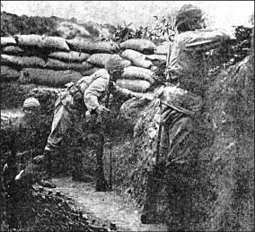
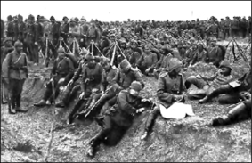

MEKTUPLAR
İki Lâle
Çok eski arkadaştı onlar. Hem liseyi hem hukuk fakültesini beraber bitirmişlerdi. Harp Okulu’ndaki yedek subay eğitiminden sonra yolları ayrıldı. Hüseyin Ragıp İstanbul’da kalıyor, Münir Çanakkale’ye gidiyordu. Ama arkadaşlıkları asla bitmeyecekti. Daima mektuplaşmaya karar verdiler.
Münir Çanakkale’den Hüseyin Ragıp’a söz verdiği mektuplardan birini yazıyordu:
“... Toprak kerevetimden şimdi kalktım. İçinde barındığımız kocaman oyuğun ağzına yaklaşıyor ve dışarıya bakıyorum. Toprak, gecenin sis ve rutubetiyle ıslak... Şuh ve şirin çimenler zümrüt dereler teşkil ederek aşağılara doğru akıyor. Güneş yükseliyor...
İngilizler bugün galiba geciktiler. Sabah salâmı makamından teatisi âdet olan top ve tüfek gürültüsünden henüz eser yok.
Aşağıya iniyor ve toprak peykenin üstüne oturarak sana bu mektubu yazmaya başlıyorum. Arkadaşım karşımda vazifesiyle ilgili evrakı hazırlamakla meşgul... Dün gece geç vakte kadar devam eden top atışı ikimizi de uykusuz ve yorgun bıraktı. Oh... Derin ve uzun bir uykuya ne büyük ihtiyaç hissediyorum.
“… ve hakkınızı helal edin…”
(Cepheden Mektuplar’dan)
... Kumandanım beni çağırıyor. Mektubuma biraz sonra devam ederim...
... Kumandanı gördüm ve geldim. Fakat maatteessüf mektubuma devam edemeyeceğim. İngilizler faaliyete başladılar. Ateşin birden çok şiddetlendiğine bakılırsa bunların sabah keyfi olsun diye atılmadığına inanmak lâzım. Anlaşılıyor ki siper komşularımız bugün pek ciddi niyetlerinden birinin daha tecrübesine girişecek... Oooo... Bugünkü ateş pek başka. Etrafta kıyamet kopuyor… Ah... Öyle uykum var ki... Top ve mitralyöz yıldırımları kulaklarımı patlatıyor. Allahaısmarladık kardeşim.
Kumandanın yanına gelirken tatlı bir yamaçtan kopardığım iki lâleyi Çanakkale hediyesi olarak zarfın içinde gönderiyorum. İnşallah yine görüşürüz.”
Mektup yazıldığı tarihten üç hafta sonra Kızılay hastanelerinden birinin vasıtasıyla Hüseyin Ragıp’a ulaştı. Mektubun yanında Nihat imzalı küçük bir not vardı:
“Beyefendi, ben Münir’in siper arkadaşıyım. O vazifesi başında Rahman’a kavuştu. Ben de yaralandım, bu hastaneye naklolundum. Şehit düştüğü geceden evvel yazıp da postaya vermeye vakit bulamadığı mektubu size gönderiyorum. Merhumun emanetidir.”
Hüseyin Ragıp der ki:
“Münir’in mektubunu bir çocuk gibi ağlayarak okudum. İmzasının yanına artık solmuş ve kurumuş iki lâle iğnelemişti. Ah sevgili Münir... Al lâlelerini topladığın o bayırlar içinde kana bulanmış naşınla sen de bir lâle olup kalmıştın.”139
Borçlarımı Ödeyin
18 Mayıs 1915, Pazartesi
Yüzbaşı Mehmet Tevfik, Ovacık yakınlarındaki ordugâhta gözünde tüten baba ocağına mektup yazıyordu:
“Sevgili babacığım ve valideciğim,
Arıburnu’nda ilk girdiğim müthiş muharebede pantolonumdan hain bir İngiliz kurşunu geçti. Bundan sonra gireceğim muharebelerden kurtulacağıma ümidim olmadığından bir hatıra olsun diye şu satırları yazıyorum.
... Gözbebeğim zevcem Münevver ve oğlum Nezih’ciğimi önce Cenab-ı Hakk’ın sonra sizin himayenize bırakıyorum. Onlar hakkında ne mümkünse lütfen yapmaya çalışınız. Servetimiz olmadığı malumdur. Mümkün olandan fazla bir şeyi isteyemem, istesem de boşunadır.
Refikama hitaben yazdığım kapalı mektubu lütfen kendi eline veriniz. Fakat çok üzülecektir, o üzüntüyü giderecek şekilde veriniz, teselli ediniz. Allahu Tealâ’nın takdiri böyleymiş.
İsteklerim ve borçlarım hakkında refikamın mektubuna koyduğum deftere ehemmiyet veriniz. Münevver’in hafızasında veyahut kendi defterinde kayıtlı borçlar da doğrudur. Münevver’e yazdığım mektup daha geniştir, kendisinden sorunuz.
Sevgili babacığım ve valideciğim, belki bilmeyerek size karşı birçok kusurda bulunmuşumdur. Beni affediniz, hakkınızı helâl ediniz, ruhumu şad ediniz.
Sevgili hemşirem, Lütfiye’ciğim, bilirsiniz ki sizi çok severdim. Sizin için gücümün yettiği nispette ne yapmak lâzımsa yapmak isterdim. Belki size karşı da kusur etmişimdir. Beni affet, hakkını helâl et. Yengeniz Münevver Hanım ile oğlum Nezih’e sen de yardım et. Sizi de Cenab-ı Hakk’ın lütuf ve himayesine tevdi ediyorum.
Ey akraba ve ehibba! Cümlenize elveda. Cümleniz hakkınızı helâl ediniz. Benim tarafımdan cümlenize hakkım helâl olsun. Hepinizi Cenab-ı Hakk’a tevdi ve emanet ediyorum. Elveda, elveda!
Ebediyen Allahaısmarladık, sevgili babacığım ve valideciğim...”140
Mehmet Tevfik, mektubun yazıldığı tarihten on beş gün sonra, 2 Haziran 1915’te şehit oldu.
Çamaşır Falan İstemem...
Hasan Etem, 4 Nisan 1915 günü annesine yazdığı mektuba şöyle başlıyordu:
“Dört asker doğurmakla övünen şanlı Türk annesine!”
Hasan Etem, yeni aldığı mektuptan duyduğu sevinci, çevresindeki tabiat güzelliklerini, silah arkadaşlarını anlattığı mektubunu şu satırlarla bitiriyordu:
“... Ey benim Rabbim! Şu kahramanların bütün dilekleri ismi celâlini İngilizlere ve Fransızlara tanıtmaktır.
... Huzurunda titreyerek sana dua eden biz askerlerin süngülerini keskin et. Düşmanlarını zaten kahrettin ya bütün bütün mahvet!
... Anneciğim, oğlun Halit de benim gibi güzel yerlerdedir...
... Çamaşır falan istemem. Paralarım duruyor. Allah razı olsun. 4 Nisan 1915. Oğlun Hasan Etem.”141
Hasan Etem, iki gün sonra şehit oldu. Kardeşi Halit, Zığındere Muharebeleri’nde yaralandı ve gazi olarak baba ocağına döndü.
Hasan Ethem şehit olduğunda 16 yaşında olan kardeşi Hilmi ile 10 yaşında olan kardeşi Şevlut, ağabeylerinin arzu ettiği gibi sonradan Çanakkale’yi gördüler, ondan bir iz aradılar.
Orada her iz Hasan Etem’e aitti.
Sana Vasiyetim Var
62. Alaydan Üsteğmen Zahid, eşine yazdığı mektupta “Bugünlerde her zamankinden daha önemli muharebelere gireceğim.” diyordu:
“... Bilirsin her muharebeye giren ölmez. Fakat ölürsem gam yeme. Beni ve seni yaratan Allah bizi nasıl dünyada birbirimize nasip ettiyse elbet ruhlarımızı da kavuşturur. Vatan için şehit olursam bana ne mutlu. Ancak sana vasiyetim var.
Eşyanın listesi ilişiktir. Bunları sat, ele geçecek paradan mihri muaccel ve müeccelini al. Üst tarafı ile bana mevlit okut.
Eğer bunlar sana borcumu ödemezse hakkını helâl et ve ilk gece aramızda geçen sözü unutma...”142
Zahid’in son mektubuydu bu.
9 Ocak 1916’da şehit oldu.
Geri döndü mü kimbilir? (Cepheden Mektuplar’dan)
Terekesinden kırmızı kurdeleye bağlı bir de saç demeti çıkmıştı. Tazecikti ve minicik bir yavrunun saçından kesilmiş olduğu anlaşılıyordu. O yavrunun adı Nadide idi.
Şiranlı Üsteğmen Zahid, Aziziye’nin Kılıç Mehmet Bey köyünden eşi Hanife Hanım’a yazdığı mektubu şu cümle ile bitirmişti:
“ Bu vasiyetnamemi aldığınız zaman yüksek sesle ağlamanıza razı değilim.”
Ama biz ağladık Zahid.
Mehmet Tevfik’in ölümün gölgesinde borçlarımı ödeyin çırpınışlarına, Nadide’nin terekende de yetim kalan saç demetine ağladık.
Kim bilir kimlerin nerelerde hayatla oynaştığı bir saatte sevdaları kana batmış adamlara ağladık.
Yolları bir yıkık siperin içinde biten, yuvaları siperlere devrilen, mektupları kaybolan adamlara ağladık.
Bir ödenmez borcun altındayız Zahid, ağladık.
Ya o söz neydi aranızda?
Cephemize kudret veren analarımız sözlerini unutmamışlardır.
Biz tutamadığımız sözlere ağladık.
Demek isteriz ki Çanakkale’ye,
Aramızda geçen sözü unutma!
Biz kimsesiz lâlelerine mertebe vermedik mi?
Oğluma Ne oldu?
12. Tümenin İzmir’deki 35. Alayı Çanakkale’ye gönderiliyordu.
10 Temmuz 1915’te İzmir’den hareket eden tren İstanbul’a doğru yola çıktı. Askerler yanık türküler söylerken takım subaylarından Hakkı, dışarıyı seyrediyordu. İzmir–Manisa arasında bir kadın gördü:
“Zavallı yaşlıca bir kadın bir eliyle askeri selamlıyor, öteki eliyle telgraf direğini tutmuş hıçkırarak ağlıyordu. Ağlayışının verdiği acıyı hafifletmek için ayaklarını sımsıkı telgraf direğine sarmıştı. Hakiki bir Anadolu askerinin bağrı yanık anası nasıl da belli oluyor. Elbisesi köylülere mahsus bir perişanlık içinde.
Benim de gözlerim yaşardı. Gözden kayboluncaya kadar bu dertli anayı seyrettim. Ömrüm boyunca bu gözü yaşlı anayı unutamayacağım.”143
Günler sonra Hakkı’ya gelen bir mektup gözü yaşlı annelerin Çanakkale’ye gönderdiği mektupların ortak bir özeti gibiydi:
“Oğlumun en iyi arkadaşı sendin.
Oğluma ne oldu?”144
BU YAŞANANLAR EFSANE Mİ GERÇEK Mİ?
Orada Düştü Gitti
Sandıklı’nın Kusura köyünden Hüseyin oğlu Mustafa, şahadet parmağına ne olduğunu soran gazeteci Ruşen Eşref’e “Orada düştü gitti” der. Yalnızca bir parmaktan olduğu için mahcup gibidir. Zaten arkadaşları söyleyince fark etmiştir yaralandığını. Bir de bakmıştır, parmak yok... “Eh ben yaralanmışım...” demiştir. Zaten ateşin içinde bir şey düşünememektedir insan:
“Öleceğini mi kalacağını mı bilmiyorsun. Zabitlerimiz bize tembih ederdi ki, oğlum Selâten Tüncina’yı okuyun. Bilenlerimiz okurdu, bilmeyenlerimiz de tekbir alırdı.”
Mustafa, Kirte’de savaşmıştır:
“Mustafa Efendi vardı, Yüzbaşımız önümüzde, haydi evlatlarım! Anamız bizi bugün için doğurdu diyerekten elinde kılıçla... İngiliz’in ikinci istihkâmına da girdik, oradan da kaçırdık.”
Osmancık’ın İncesu köyünden Ali oğlu Mehmet Çavuş da Kirte’de savaşmıştır:
“... Asker birbiriyle helâlleşti. Sonra yola çıktık. Seddülbahir görünecek yere çıkınca düşman elektrik tuttu... Yere yattık... Yata kalka Donuz Dere’ye yanaştık. Neferin biri ayağa kalkmadı, şehit gitmiş... Zahir çılgın kurşunlardan geldi. Yani serpinti kurşun... Denizin kenarına indik. Birkaç düşman neferi suyun içine kaçmıştı... Çökmüşler, kafaları görüküyordu...
... Yüzbaşımız Mecruh gitmişti. Birinci takım kumandanı Hayri Efendi de şehit düşmüş idi. Bölüğün idaresi bana kalmış idi... Yine Donuz Deresi’ne indik... Düşmanla karıştık. Efrad birbirini süngülüyordu. Benim karşıma bir Fransız zabiti geldi. Ben istiyordum ki onu düşürtmeyi... Daha süngüyü saplamaya tahammül edemedim... Kurşunla vurdum… Kılıcı elinden düştü... Belinde loververi varmış, bana attı... Sol kolumdan vurdu.”
Sırf Acıdığım İçin
Ruşen Eşref Çanakkale’de bulunmuş subaylarla mülâkat yapmak için Harbiye Nezaretindedir. Arkadaşları az sonra harp hatıralarını anlatacak Mülâzım-ı Evvel (Üsteğmen) Ruhi Bey için derler ki:
“Bizim sınıftandır... Akşam nöbet mızıkası çalınmaz mı huylanmış bir aslan gibi gözlerini parıldatır da saldıracak bir yer arardı. Deli olurdu âdeta. Ateş gibidir...”
“Bu muharebede Çanakkale’de, Kafkas’ta bulundu. Beş altı yarası vardır. Çanakkale’de yanı başında bir gülle patlamış. Sol bacağından sekiz on santim et koparmış. Sağ dizinden deri çıkardılar da sol bacağına kapladılar.”
Az sonra gelir Ruhi Bey. Sert bir asker selâmıyla kendini tanıtır. O, düşmana Seddülbahir’de ilk müdafaayı yapan 26. Alaydandır. Konuşmasının sonunda batarya ateşimizle düşürülen bir düşman uçağından bahseder:
Mehmetçiğe derin saygı. Türk askeri yaralı düşman askerini taşıyor.
“… Tayyare düştü. Tayyareciler kendilerini denize attılar. O vakit de bizim hiç olmazsa bir esire fevkalâde ihtiyacımız vardı.
... Mıntıka kumandanımız Mahmut Bey bu tayyarecilerin mutlaka kurtarılmasını istiyor. Tayyareciler en nihayet bir buçuk kilometre kadar sahile yakın geldiler. Sahil boyunca mayın döşeli olduğundan kimse giremiyordu.
Bu noktada tahassüsatımı söylüyorum. O iki adam bağırıyordu. Yani ölüyorlardı artık. Ve sahilden hâlâ imdat umuyorlardı. Tabii bir kumandan emir verdiği vakit süngü üzerine, top üzerine gidip ölmek vazifemdir. İşte o vakit mıntıka kumandanı Mahmut Bey “Kim girer?” diye bir sual sordu. Bu İngilizlere sırf acıdığım için, düşman olsalar da onları kurtarmak bana bir vicdanî vazife oldu.
... Daldım. O zaman arkadaşım Mülâzım Kâşif de “Ben de girerim” diye bendenize refakat etti. O çocuk sınıf arkadaşımdır. Şimdi Rusya’da esir. Zavallı... Beraber girdik. Muttasıl düşman topları ateş ediyor. Monitörler karşımızdan eksilmiyor. Tayyareler tepemizde dönüyor...
Fakat biz tabii pek alçağa düşüyorduk. Sular biraz dalgalıydı. Ne bizimkilerin ne de onların makas ateşleri bizi kıstırabiliyordu. Gülleler hep ötemize berimize düşüyordu.
Maatteessüf o tayyarecilerden biri boğuldu. Çünkü bizde de takat kalmamıştı. Ötekini kurtardık. Mahmut Bey kendisini aldı, mıntıkasına götürdü. Orada İngiliz’e masaj yapıldı. Güzel baktılar, sonra 5. Ordu’ya teslim edildi.
Giderken Mahmut Bey’e demişti ki; Türkleri şöyle cesurdurlar böyle âlicenaptırlar diye kitaplarda okudum. Bu defada cephede gördüm. Fakat böyle şiddetli bir ateşe karşı bu derece fedakârlıklarını bilmezdim. Bu derecesini bir İngiliz bile yapamaz.”
Borazancı Mehmet
Yüzbaşı Emin Âli Bey “Çanakkale Muharebeleri’ni yapan ordudan size dört-beş örnek vermek isterim” der Ruşen Eşref’e. İlk örnek bir nefere aittir:
“Arıburnu’nda yapılan şiddetli bir hücumdan üç gece sonra Kanlısırt’ta en ileri mevziye gitmiştim. İleri mevzide takım kumandanı bizimle düşman siperleri arasında bulunan sahadaki çukurlardan birinde inilti halinde boğuk bir sesin işitilmekte olduğunu söyledi. Açıkgöz, çevik iki keşşaf nefer göndermesini söyledim ve merakla hadiseyi takip ettim.
Keşif kolu daha hazırlanmamıştı bile...
“Amanın arkadaşlar! Düşman bombaları ile geliyor!” diyen bir feryat işittik. Hemen bir tenvir tabancasıyla aydınlattığımız o saha üzerinde gördük ki kuvvetli bir Avustralya taarruz kolu ilerlemekte. Şiddetli bir ateşle bunları siperlerine kovuverdik. Fakat bize semalardan gelen tatlı bir hitapmış gibi düşmanı haber veren o meçhul askeri bulmak istedik. Gönderdiğimiz keşif kolu bize şu adamı getirdi.
(Emin Âli Bey kırmızı kenarlı küçük siyah bir defterin lâstiğini çıkarıp künyeyi okur)
... 47. Alay Kumandanı Şehit Tevfik Bey’in boru neferi, Antalya’nın Kağnıcılar Köyünden Sarı İbrahim oğlu Mehmet...
İşte bu Mehmet’i son nefesini verirken getirdiler.
Bu nefer üç gün evvel yapılan büyük hücumda düşman siperlerinin önünde yaralanmış ve gece karanlıklar içinde sürüne sürüne ancak üç günde bizim sipere yaklaşabilmiş...
Düşünün, müteaddit yaralardan sonra birçok tehlikeler arasında gece karanlıklarında siperlerine kadar sürünen bu kahraman çocuk hayatının son deminde kendine değil,
siperdeki arkadaşlarına unutulmaz bir fedakârlık göstermiş, bize düşmanın baskınını bildirmişti. İşte beyefendi, Çanakkale Muharebeleri’ne hâkim olan sır burada, bu büyük ruhtadır.”
Gözüm Açık Gitmesin
“Bir de zabit tipi vereyim” der Yüzbaşı Emin Âli Bey:
“Yine Kanlısırt’ta 5/6 Mayıs hücumunu yapan bölüklerden birinin (defterini açıp okur: 6. Alay 2. Bölük) Kumandanı Yüzbaşı Hasan Fehmi Bey hücumun en şiddetli anında iki yerinden yaralanmıştı. Neferleri kendisini pek severdi. Bir kısmı etrafını aldı.
Şehit Hasan Fehmi Bey...
(Defterinden birkaç sayfa açar)
Diyarbakırlıdır efendim. Okuyacaklarım da harfi harfine kendi ifadesidir. Hasan Fehmi Bey etrafını alan askerlere “Çocuklar benimle uğraşacak zaman değil; düşmana yumruğunuzu vuracak zamandır. Kuvvetli bir hücum yapın ki bölüğümün muvaffakiyetini göreyim. Ta ki gözüm açık gitmesin.” demiş ve hücumunu kızıştırmak için kalkarken yeni bir mermi ile kalbinden vurulmuştur.”
Aman Ayağımı Kesmeyin
Emin Âli Bey’in şimdiki örneği Seddülbahir cephesindendir:
“Burada Fransızlar beş altı günden beri kesif ve şiddetli topçu ateşleriyle hazırladıkları kuvvetli bir hücumu baskın şekilde yaptılar. Hedefleri Kerevizdere’yi aşıp Alçıtepe’yi solundan tehdit etmekti. Bu hücumda infilâk kuvveti gayet müthiş bir obüsün duman ve toz bulukları içinde kaldık. Bulutlar sıyrılınca gördük ki 6. Alay 6. Bölük Mülâzım-ı evveli Ulvi Bey yere düşmüştü. Yanına gittim. Baktım, bir obüs parçası ayağını almış götürmüş. Dün yanımda gördüğünüz Yüzbaşı yok mu? İşte o... Bakınız bu kadar sakin bir adam, hiç halinden umdunuz mu?
Dur yolcu! Bilmeden gelip bastığın,
Bu toprak, bir devrin battığı yerdir.
Eğil de kulak ver, bu sessiz yığın,
Bir vatan kalbinin attığı yerdir.
O vakit doktorlar bir deriyle köküne bağlı olan bu ayağı kesmek istediler. Bilir misiniz ne dedi... “Aman ayağımı kesmeyin! Sonra bölüğümün başına bir daha gidemem.”
Şehit Kemal Bey
“Bir de Erkânı Harp Zabiti vereyim” der Emin Âli Bey:
“İkinci Tümenin Erkânı Harbi (Kurmay Başkanı) Şehit Yüzbaşı Kemal Bey, maruf sima, değil mi efendim? (Hani tayyare ile Mısır’a uçan zabit...) Ta kendisi... Kemal... Yüksek ruhlu adam.
Bütün fırka cepheyi işgal etmiş, müdafaaya sarılmıştı. İki alayın birleştiği bir vadinin başında ufak bir gedik açan Fransızlar iki alayı birbirinden ayırmaya çalışırken bilir misiniz Kemal Bey ne yaptı? Yaptığı şey belki vazifesinin haricindeydi... Şüphesiz böyle... Fakat sönmeyen bir cidal ateşiyle eline geçirdiği bir makineli tüfeği vadinin altına koydu ve Fransızları ipe dizer gibi yere dizdi...”
Bir nefer, subaylar ve bir kurmay subay... Dördüncü tip, yedek subaylardır:
“Bir aralık Kumkale’ye gitmiştik. (Anadolu yakası) Yanımda bir ihtiyat zabit vekili vardı. Efendim, Kumkale’den birkaç motor botla karanlıkta İngilizlerin sağ cenahına kaçarak bir baskın yapamaz mıyız, dedi. Gelibolu’ya geçen Süleyman Paşa’yı o dakikada nasıl hatırladım, bilseniz!”
Yüzbaşı Emin Âli Bey sözlerini şöyle bağlar:
“İşte Bey... Şu dört beş numune size gösteriyor ki Çanakkale baştan başa bir destandır, baştan başa bir avene-i men akıp, baştan başa bir tarihtir.”145
Çanakkale’de gerçekler öyle destanlaşmış, gerçekler öylesine efsane katına yükselmiştir ki olayları şahitlerinden dinlemek gerçeğin fark edilmesini kolaylaştırıyor...
Bu yaşananlar efsane değildir gerçektir. Ve Çanakkale gerçeğini efsaneler de kıskanmıştır.
17 ŞUBAT 1953’TE KARA HARP OKULU’NDA BİR HARP TARİHİ DERSİ
3. Kirte Muharebesi
Genel Kurmay Başkanlığı Harp Tarihi Dairesi Türk Seferi Grubu Amiri Kurmay Albay Hayrettin Arun, Kara Harp Okulu’ndaki bugünkü dersinde 3. Kirte Muharebesi’ni anlatacaktır.
Albay Arun önce muharebeyi takdim eder. Düşman 25 Nisan 1915’te Arıburnu ve Seddülbahir kıyılarına asker çıkarmış, bir günde varacağını zannettiği Alçıtepe’ye kırk günden beri ulaşamamıştır. Çanakkale yolunun hâlâ açılamamış olması İngiliz nüfuz ve itibarını kökten hırpalamaktadır. İngilizler Seddülbahir’de umumî taarruza geçerek, bulaştıkları bu kanlı işte talihlerini tekrar denemeye karar verirler. Hedef önce Alçıtepe sonra Kilitbahir tabyalarıdır.
3. Kirte Muharebesi adı verilen bu kanlı savaş 3 Haziran 1915’te İngiliz ve Fransız topçusunun Türk mevzilerine ateş açmasıyla başlar. Umumî hücum 4 Haziran 1915 öğle üzeri yapılır.146
“Şimdi” der Albay Arun, “Bu muharebede cephedeki yalnız bir Türk Taburunun, 19. Alay ve 2. Taburunun muharebesini; yayınlanmış Türk ve Ecnebi kitaplarından, İngiliz Resmî Harp Tarihinden, Genel Kurmay Başkanlığı Harp Tarihi Dairesinin arşivindeki resmî belgelerden bilgiler toplayarak, bunlara bu taburun içinde muharebeye girmiş olanların müşahedelerini de katarak, muharebeyi hakiki olarak takip edelim.”
Taarruz Başlıyor
2. Taburun mevzisi düşmana doğru 900 metre genişlikteydi. Sağında Zığındere, solunda 56. Alaydan bir taburun mevzisi vardı. Mühim görülen arazi tümseklerinde ileri siperler kazılmış, tel örgüsü de yapılmış idi. Tabur 50’şer metre ara ile daha üç hat siper yapmıştı ve irtibat hendekleri de kazılmış idi.
Tabur 4 piyade bölüklü idi. Mevcudu 12 subay 1018 er idi. Erler ve subaylar birbirlerine sonsuz sevgi ve saygı bağlarıyla bağlanmış idi.
Düşman harp gemileri çok defa Alçıtepe’deki topçularımıza ateş ediyordu. Karaya da yüzlerce top çıkarmışlardı. Bu dar arazide istedikleri yere büyük ve devamlı topçu ateşi toplayabiliyorlardı. Düşman 3 Haziran gününü toplarımızı ve mevzilerimizi tahrip etmekle geçirmiş idi.
4 Haziran 1915 günü düşmanın topçu ateşi çok şiddetlendi. Bu hücumdan evvel yapılan topçu ateşiydi. Hendeğin içine düşen düşman topçu mermisi oradakilerin hepsini şehit ediyor ve hendeği yıkıyordu. Hendeğin dışına düşen mermiden ise üst baş yanıyor, el yüz kararıyor, kulaklar uğulduyor, işitme, görme, düşünme kabiliyeti azalıyordu.
Düşman topçu ateşi ön siperlerimizi cehenneme çevirirken gerideki asker ön sipere akmaya başladı. Ateşler kesilince süngü takmış düşman piyadeleri siperlerinden fırladı. Ön hatta 4 bin mevcudu ile 6 taburlu 88. İngiliz Tugayı, 19. Alayın 2. Taburuna hücuma kalkmıştı.
Dar ve derin siperler içinde düşmanı sabırsızlıkla bekleyen Türk erleri ayağa kalktı. Tüfeklerini hendeğin üstüne koydular ve düşmana dikkatle ateş açtılar. Topçu mermisi kadar tüfek kurşunu da kıt idi. Vuracağına inanmadan tetik çekilmez idi. Bu sebepten Türk ateşi gürültüsüz idi. Bu, şaşılacak soğukkanlılıkla yapılan meşhur Türk piyade ateşidir. İngilizler her yerde bu ateşten yılmışlardı ve İngiliz tarihinde bu ateşten daima “Meşum ateş” diye bahsedilir.
Taburun emrindeki iki makineli tüfek de bu sırada patiska yırtar gibi ateş açtı. Topçumuz da ateşe başladı. Yüzlerce İngiliz vuruldu.
İngilizler siperlerimize 50 metre yaklaşınca siperlerdeki mangalar dışarı fırladılar. Çoğu diz çökerek bir iki kurşun daha attı. Bombacılar ileri koşup en yakın düşman topluluğuna bombalarını attılar.
Düşman yere yatmış, diz çökmüş veya ayaktadır. Geriden gelenlerle mütemadiyen sıklaşmaktadır.
Ön siperlerimizdeki iki bölüğümüze hücum eden bu düşman, birisi ikinci hatta olmak üzere 4 İngiliz taburudur. Bu askerler seçme İngilizlerdi. Öndeki taburlardan biri 2/Hampshire Taburu, ikincisi 2/Royal Fusiliyers, (Kral Silahendazları) üçüncüsü 1/K.O.S.B. idi. Royal Scots Taburu ikinci hattaydı. 1/Essex Taburu ihtiyatta idi.
İngiliz ordusunun bu taburlara büyük itimadı vardı. Bunda da haklıydılar. 600 metre cephe ile hep birden dışarı fırlayan bu genç ve seçme askerlerin manzarası heybetliydi. Hep birden “Horra!” diye bağırıyorlar, çılgınca koşuyorlardı.
Süngünün Konuştuğu Anlar
Türk subayı “Allah Allah!” diye bağırarak düşmanın içine çılgınca atılınca, erler de gök gürler gibi “Allah Allah!” diye haykırarak fırlayıp subayı geçtiler.
Bu sahne Türk’ün hayalinde yaşattığı süngü hücumu sahnesidir. Bu an mukaddestir. Bu an vatanın kurtarıldığı andır.
Bir elde süngü vardır. Diğer el açılmış parmaklarıyla düşmanı boğmaya hazırdır. Üst-baş yanmış, göğüs-bağır açıktır. Herkes en yakınındaki düşmanın üzerine atılır.
Türk bu anda vecd içindedir. Damarlarındaki kan, ateş olmuştur. Vurulanlar bile yaraları soğuyuncaya kadar ateş eder.
Askerin çoğu süngüyü kılıç gibi kullanır. Bazıları hırsından süngüyü atarak elleriyle bir düşmanın boğazına sarılır.
İngilizler de devrilen arkadaşlarına bakmadan, korkmadan, bir an önce yetişmeye can atarak süngüleşenlere katılmaya devam etti. Türk ihtiyat takımları da süngüleşmeye koşup geldiler. İki taraftan da beslenen boğuşma dakikalar geçtikçe kızıştı.
Taburun sağ kanadındaki 3. Bölüğe ise Worcestershire Taburu saldırmıştı. Bu saldırı baskın gibi olmuştu. Çünkü hücum sahalarında derecik çukurları vardı. Buralara gizlenip ateşten korunmuşlardı. Geriden çok kuvvetle de besleniyorlardı. Bu hücuma İngiliz zırhlı otomobilleri de katılmış idi. Bunlar maneviyata tesirli oldular. Ateşimizi çektikleri için de İngiliz piyadesi rahatladı. Burada vaziyetin düzeltilmesi gerekiyordu.
Zığındere’nin öteki yamaç ve sırtlarını denize kadar müdafaa eden bir taburumuza da Hint Tugayı hücum ediyordu. Bir Gurka Taburu da dereden ilerlemeye uğraşıyordu.
3. Kirte Muhaberesi (Fahri Belen’in adı geçen eserinden).
Bölgenin liyakatli komutanı Binbaşı Kadri en yakında ihtiyatta olan 25. Alayın 7. Bölüğünü buraya hücuma gönderdi. Bölük zayiatsız yaklaşıp hücuma geçti. İngilizleri süngüledi. Siperler çetin boğuşmalarla birer birer geri alındı.
Şimdi bu kahraman asker dereden ilerleyen Gurkalara ve sırtta hücum eden Hintlilere tesirli yan ateşi yaparak orada bunalmış olan taburumuza kıymetli yardımda bulundu. Orada da düşman hücumu söndürülmüş oldu.
Askerimiz bu kanlı meydanda düşmanı süngüleye süngüleye geri attı. Buralarda bir taburumuz bir saat içinde altı İngiliz taburunu yarı yarıya telef ederek mağlup etmişti.
Fakat Tabur Kuşatılıyordu
Taburun solundaki 56. Alay cephesine hücum eden 42. İngiliz Tümenine bağlı tugaylar ise tam muvaffak olmuştur. Düşman burada 1000 metre kadar ilerlemişti. Cephemiz yarılmış idi.
İlerlemiş bulunan İngiliz Tugayları açık kanatlarından gelebilecek tehlikeyi gidermek için, bir saat önce cephesinden gelen düşmanı hezimete uğratmış olan 2. Tabura yandan hücuma geçti. En soldaki bölüğün vaziyeti çok fenalaşmıştı. Subaylar şehit olmuş veya yaralanmıştı. Erler, çavuş ve onbaşıların etrafında toplanarak sebat ediyorlardı.
Bu kesimde şimdiye kadar görülmemiş bir boğuşma başladı. Düşman el bombası atarak yandan siperlerimiz boyunca ilerlemeye çalışıyordu. 200x200 metrelik saha beşer-onar kişilik gruplarla birbirlerini boğmaya çalışanlarla dolmuş idi. Düşman cepheden de hücum ediyordu. Daha ileriye gitmiş İngiliz müfrezeleri de sipersiz yerlere saldırıyordu. Tabur kuşatılıyordu. İngiliz topçu ve makineli ateşleri de hiç kesilmiyordu.
Tabur Komutanı sağdaki bölüğün yarısını çekip düzenli muharebe hattı kurmak istedi. Fakat vazife verdiği askerler bu mahşer içinden geçerlerken vuruldu. Sağ kalanlar da intizamsız askere karıştı. Şimdi tabur yarım daire içine alınmıştı. Üç istikametten ateş altındaydı. Vakit ikindi olmuştu. Vaziyet çok fena idi.
Tabur Komutanı sağdaki bölükten bir iki manga daha alıp bunları dağılmış bölüklerden topladığı askerlerle birlikte boğuşmaların devam ettiği sahaya yaklaştırdı. Bu sırada da düşman hem cepheden hem yandan hücuma geçti. 2. Taburun iki kahraman bölüğünden sağ kalan erler bu düşman hücumunda şehit oldu. 300 er göğüs göğse muharebelerle hayatını bilerek feda etti.
Düşmanın ilerlemesi, sipersiz yerlerde mevzilenmiş dağınık askerin ateşi ile durduruldu. Buhran gittikçe artıyordu.
Düşmanın yan ve gerilerine taarruz etmekle bu buhran kökünden halledilebilirdi. Alay komutanı 25. Alayın iki bölüğünü ve 6. İstihkâm bölüğünü bu bölgeye sevk etti ve taarruzun bu bölüklerle yapılmasını emretti.
Bölükler Zığındere yolu ile yaklaştılar. Tabur çemberinin içine girdiler. 150 metre kadar açık sahayı geçmek lâzım geliyordu. Bu geçişi düşman bataryaları ve makineli tüfekleri fark etti. Talihsiz bölükler daha yolda iken çok kayıp verdi. Sahada boğuşmalar sıklaşmıştı. Yeni gelen bölüklerden sağ kalanlar da bu boğuşmaya katıldı. Bu bölük de elden çıktı.
Düşman bu sahayı şiddetli top ve makineli tüfek ateşi altında tutuyordu. Herkes barındığı çukurda mıhlanıp kalmıştı. Ayağa kalkan vuruluyor idi. Sabahtan beri kimse bir şey yememiş su içmemişti. Kızgın güneş de takat kesiyordu. Yaralıların hali feci idi. Buraya ne doktor gelebilir ne de yaralı doktorun yanına gidebilirdi.
Akşama doğru vaziyet çok fena idi. 2. Taburun 12 subayından 3 subay, 1018 neferinden 105 nefer kalmıştı. Onlarda dağınık askere karışmıştı.
Bir Şişecik Elden Ele Dolaştı
Akşam üzeri çok genç bir subayın sürüne sürüne ilerlediği görüldü. Arkasından da sürüne sürüne ilerleyen erleri gelmekteydi. Subay erlerini küçük su yarıntısında topladı. Burada diz çökmüş vaziyette durulabiliyordu.
Düşmanın Türk subaylarını tercihen öldürdükleri sabit olduğundan subayların rütbe ve subay alâmetlerini takmamaları emredilmişti. Bu subay da susuzluktan, yorgunluktan sararmıştı. Üstü başı perişandı. Onun da elinde süngülü tüfek vardı.
Kıtası elli kadardı. Erlerine dönerek “Ben ileriye gideceğim. Düdük çalınca birden fırlayıp arkamdan gelin. Ben ne yaparsam siz de onu yapın.” dedi. Bir onbaşı ile sürünerek ilerledi, gözden kayboldu.
Erler bakıştılar. Bugün ölüm günü idi. Düdük çalınca hücuma kalkılacaktı. Bu hücum neticesinde ölüm muhakkaktı. Hepsi bir iki dakikalık ömürleri kaldığını doğru ve haklı olarak kestirdi. 20–40 yaş arasındaki bu insanlar hayatlarının son dakikalarında olduklarını biliyorlardı.
Çavuş hazin bir sesle “Süngüleri yoklayın... Tüfekler dolu olsun.” dedi. Tüfekler dolu idi fakat bir kere daha bakıldı.
Diz çökmüş vaziyette idiler. Kulaklar düdük sesinde idi. Biri acı acı gülmeye çalışarak “Allah ne yazdıysa o olur.” dedi. Herkes başını önüne eğmişti.
Biri yavaş bir sesle yanındakine vasiyette bulundu: “Ben şehit olursam sen de sağ kalırsan ve yurduma uğrarsan onlara söyle ki vatanımı, milletimi kurtarmak için hayatımı bilerek verdim. Oğlum Mehmet vatanına milletine hayırlı bir insan olmalıdır. Hanem tarafına da selam ederim...”
Türk askeri siperde.
Mehmetçiğin “hanem tarafı” dediği ailesiydi, zevcesiydi. Mehmetçik zevcesinden bahsetmeyi ayıp sayardı ama ömrünün son dakikasında hayat arkadaşını unutmadı.
Mehmetçiklerin hepsi vasiyetini yaptı. Birbirleriyle helâlleştiler. O sırada birisi küçük bir şişede hacı misi çıkardı. Dindarane tevekkül ile parmak uçlarını ıslattı ve sakalına boynuna mis sürdü. Allah’ına temiz, içi iman ve sevinç dolu kavuşmak istiyordu.
Bu şişecik elden ele dolaştı. Bu koku son dakikalarındaki bu insanlara manevî kuvvet verdi. Adeta ölüme kavuşmayı kolaylaştırdı.
Birisi ellerini kaldırdı. İçinden bir şey okudu. Belki kendi kendine Fatiha okuyordu. Biri tekbir getirdi. İkinci tekbiri hep birden aldılar. Üçüncü tekbiri en yüksek ses ve heyecanla aldılar.
Bu sırada biri “Kanım helâl olsun! Vatanımı kurtar Ya Rabbim!” diye bağırdı.
Diğerleri de böyle yapacaklardı. Fakat keskin kısa düdük sesi duyuldu. Hepsi birden insan takati dışında bir gayretle fırladılar.
Subay 50 metre kadar ileride yüksekçe yerdeki şehit yığınına doğru koştu. Orada üst üste iki üç kat şehit vardı. Subay şehitlerin arasına yattı. Askerleri de ona yetiştiler, onun sağında solunda şehitler içine yattılar. Burası ilerlemiş düşmana hâkim bir yerdi. Bu kıtacık yan ateşi yapabilmek için cephesi yana doğru mevzilenmiş fakat eski cepheye yan vermişti. Eski cephedeki düşman makineli tüfekleri de durmadan işliyordu.
Ayağa kalkanları gören bu makineli tüfeklerden birisi bu kıtacığa ateş açtı. Bir borudan fışkıran suların tanecikler halinde yere düşmesi gibi kurşun yağmuru oldu.
Şehitler içine girmiş bu kahramanlardan bazılarının kalkmak, bazılarının da kollarını kaldırmak istediği görüldü.
Birkaç dakika sonra orada hiçbir hayat eseri kalmamıştı. Hepsi şehit olmuştu. Subay da erler de...
50 kadar Bursalı askerin tarihi bu satırcıklardadır. Fakat Çanakkale’de yüzlerce elli kadarlar, yüz kadarlar, bin kadarlar vardır ki bir satırcık bile tarihleri yoktur.
Akşam olmak üzereydi. Düşman harekete geçmemiş hatta geriye çekilmiştir. Fakat taburun vaziyetindeki tehlike devam ediyordu. 2. Tabur Komutanı da ağır şekilde yaralanmıştı. 9. Tümen Komutanı onun yerine Binbaşı Halit’i gönderdi. Çukurlara sinmiş kalmış olan muhtelif kıta erlerinin bir teşkilâta konmasına çalışacaktı. Gece yarısından evvel iki bölükle düşmana yan hücumu yapıldı ama hücum muvaffak olmadı. Düşman gece olunca bu perişan askerlerin bulunduğu araziyi top ve makineli tüfekle daha çok dövmüştü.
Şehitler Yanıyor
Şimdi düşmanın cepheyi yardığı yerlerden en geç sabah büyük kuvvetlerle ilerleyeceği şüphesizdi. İhtiyatta asker kalmamıştı. İmdat taburları ancak bir gün sonra gelebilecekti.
Asker aç, susuz ve yorgundu. Çoğu yaralı ve perişandı. Fakat son asker de ölene kadar cepheyi terk etmeme kararı ile geriye çekilmiyorlar, akıbetlerini bekliyorlardı.
Ne var ki muharebe için orada bir siper olması lâzımdı.
Bölgedeki siperlerin hepsini düşman almıştı. Gece ateş hattı seçmek ve bu perişan askerlerle siper kazmak mümkün değildi. Gündüz bu iş katiyen yapılamazdı.
Arkada iki dereyi birbirine bağlamak üzere bir irtibat hendeğinin evvelce kazılmaya başlandığı hatıra geldi. Bu hendek ateş etmeye mahsus değildi ama yeni geleceklerin ilk barınacakları bir yer olabilirdi.
200 metre uzunluğunda olan bu hendeğe gidenler onu kapalı buldular. Hendek iki üç kat şehitle dolmuştu. Üstünde de yaralılar vardı.
Şehitler hendek dışına çıkarıldı. Şimdi de hendeğin iki tarafı şehit doldu.
Hendeğin Kirte köyü tarafındaki ucu dereye kadar geliyordu. Burada şehitleri birer birer çekerek dereye yığdılar.
İrtibat yolu artık açılmıştı. Yeni gelenler buraya girebilirlerdi. Fakat bütün gece beklenen takviye kıtası gelmedi. Ve artık sabah oluyordu.
Dereye yığılan şehitler 4 metre kadar uzunlukta bir metre yükseklikte idi. Bu adeta bir duvara benzemişti. Ve erler bu duvarın arkasından eğilerek derenin bir yamacından diğer bir yamacına vurulmadan gidip gelmeye başladılar. Burada şehitler bile vazife görmüştü.
Çok geçmeden düşmanın topçu ateşi başladı. Çok yakından ateş eden ve şehit duvarını bir müdafaa tedbiri sanan batarya bir iki mermisini şehitlerin gerisine, bir ikisini öne düşürdü, nihayet bir mermi tam şehitlere isabet etti. Şehit yığını dağıldı. İnsanlar, kollar, bacaklar havada uçtu. Bir iki mermi daha isabet edince bu şehitler yanmaya başladı. Ortalığı kuvvetli yanık et kokusu istilâ etti.
Şehitlerin yakılması mevcut perişan askeri gazaba getirdi. Hiddet ve lânet bağrışmaları olurken dere içinden üç hat halinde muntazam bir düşman bölüğünün hücuma kalktığı görüldü. Arkasından başka hatların da ilerlediği açıkça görülüyordu.
Bu muntazam düşman ilerleyişine ateş açacak, süngüsüne davranacak takatte kimse yok sanılıyordu. Demek düşman ihtiyatları, meydan muharebesinin bu ikinci gününün başında; yarılan cephemizden ilerlemeye başlamıştı.
Bu dakikada hiç umulmayan bir hâdise oldu. Toplu hücuma kalkmış düşman, şiddetli ateşlerimizle kırılıyordu. Derenin pek yakınında bir makineli tüfeğimiz patiska yırtar gibi ateş ediyordu. Düşmanın en az yarısı vuruldu. Hepsi yere yattı. Ateşlerimiz birkaç dakika içinde geriden gelenleri de yere yatırdı. On dakika geçmemişti ki hücuma kalkanlar evvelâ birer ikişer sonra beşer onar geri gittiler.
Bu umulmayan işi intizamsız, komutansız, perişan asker yapmıştı. Asker kendi kendine muharebe ediyordu.
Alçıtepe’den Gelen Ateş
Üçüncü Kirte Muharebesi’nin ikinci günü başında, yarılmış cephemiz henüz kapatılamamıştı. Fakat düşman ilerlemedi. Topçu ateşi de hafiflemişti. Hücumlar az ve cansız idi.
Öğleye doğru Kirte Deresi boyundan düşmanın mühimce bir hareket yapacağı alâmetleri belirdi. Bu düşman topluluğu üzerine de topçumuzun on kadar batarya ile 100x150 ebadında dere kısmına toplu ateş açtığı görüldü.
Alçıtepe sırtlarındaki topçumuz dürbünle bu düşman topluluğunu görmüş ve ateşle bu düşmanı dağıtıyordu.
Ateş on dakika kadar sürdü, gök gürültüsü gibi geldi geçti. Orası bir an için cehennem olmuştu. Düşmanın kol ve bacaklarının havada uçuştuğunu askerimiz nefes almadan seyretti. Artık düşman buradan bir hareket yapamazdı. Çünkü kırılmış ve yok olmuşlardı. Fakat askerimiz bizim topçudan böyle şiddetli ve düşmanı yok eden ateş görmemişti. Ve buna hiç alışmamıştı. Çünkü topçu cephanesi pek kıt idi. O zaman cephane Almanya’dan gelebilirdi. Bu yol ise o tarihte kapalıydı.
Kalbi iman dolu, yalnız şehitlik bekleyen askere bu topçu ateşi kalp kuvveti verdi. Şimdi herkes düşman karşısında yalnız bırakılmadığına inandı. Gayretli erler mataralarla uzaklardan pınar suları getirdiler. Artık herkes neşelenmişti.
Ağır yaralı bir yüzbaşı bir erin göğsüne başını dayamış limon gibi çehresiyle güçlükle kıpırdatabildiği dudaklarıyla bir şeyler söylemek istiyordu. Fakat muvaffak olamıyordu. Arkadaşı er mendil ucunda su damlaları ile yüzünü dudaklarını siliyor ona teselli veriyordu. Bu yüzbaşı bir saat sonra ruhunu teslim etti.
Sadık arkadaşı Mehmet, vurulacağından korkmayarak onu sırtında Kirte köyünün gerisine götürmüş, bir mezar kazarak gömmüş, parasını, cüzdanını tabur kâtibine teslim etmiş ve geri dönmüştü. Bu yüzbaşı şüphesiz muharebe meydanının en bahtiyar şehidiydi. Çünkü bir mezara sahip olmuştu. Gece yapılan mukabil hücumda Mehmet de şehit oldu ama mezarı yoktu.
O da yüz bin mezarsız Çanakkale şehidi gibi bir mezara, bir abideye sahip olmayı hâlâ bekliyor.*
Bu İşin Şiddeti İngilizleri Korkutmuştu
Üçüncü Kirte Muharebesi’nin ikinci gününün yarısı geçmişti. Uzaklardan acele gelen kuvvetlerimiz zayıftı.
Hâlbuki sabahtan beri düşman saldırışları çok zayıf olmuştu. Hatta 1000 metre ilerlemiş olan düşman kendiliğinden 500 metre geriye bile çekilmişti. Taburun gerisini alan küçük düşman müfrezeleri de artık yoktu.
İlerlemesi lâzım gelen düşman niçin gerilemişti? Bu umulmaz hali şimdi İngiliz Tarihi aydınlatıyor:
“42. Tümenin Tugayları cepheyi az zayiatla yarmışlardı. İlk saatlerde baskın tesiri ile kolayca ilerlemiş fakat sonra küçük Türk müfrezelerinin kanlı süngü hücumlarından çok zayiat vermişlerdi. Bu mukavemetleri de ortadan kaldırarak 1000 metre ilerleyince kanatlarda tehlike belirmiş, sol kanatlarından (19. Alay 2. Tabur bölgesi) alçak arazide Türk siperlerine tevcih edilen ilk taarruz büyük zayiata mal olmuş ve bu mıntıka keşif cesetle dolmuştu.
Bundan başka Türkler, Fransızları ezdikten sonra yarma yerinin sağındaki İngiliz Deniz Tümenine müthiş yan ateşi yapmışlar ve büyük zayiata sebep olmuşlardı. Hatta Colling Wood taburu tamamen mahvolmuş, talihsiz tabur lâğvedilmişti. Buradaki deniz tümeni 70 subayından 60’ını ve bin erini zayi etmişti.
İngiliz Kolordu Komutanı henüz elinde ihtiyatta bulunan on kadar taburunu tehlike beliren yerleri tıkamakta kullanarak taarruzdan vazgeçmek veya bu kuvvetleri yarma yerinden ilerleterek kat’i netice için büyük bir boğuşmaya karar vermek zorunda kalmıştı.
Cepheyi yaran İngiliz Tugayı çok zayiat vermiş, subaylarının yüzde sekseni vurulmuş ve muharebeyi idare edecek kimse kalmadığından, çılgın gibi hücum eden Türklerin karşısında feci bir akıbete uğramamak için bunların geri çekilmesi ve değiştirilmesi icap etmişti.”
Bu gidiş geliş hareketlerini görebilen Türk Komutanları bunları düşmanın kat’i netice için yaptığı hareketler sanarak şerefle ölmek kararı ile meşhur “son nefere kadar vatan için ölmek” emrini vermişlerdi.
Bu işin şiddeti İngilizleri korkutmuştu. Hakikat olan şudur: İngiliz Komutanı muharebenin inanılmaz şiddetinden ve dehşetinden telâşlandı. Eğer Türkler yaptıkları delice, çılgınca hareketlerin birinde muvaffak olurlarsa daracık yarım adadaki İngilizlerin hepsini birkaç saat içinde süngüden geçirebilirlerdi. Bu korku İngiliz Komutanını tehlikeler karşısında ihtiyatlı bulunmaya sevk etti.
İngiliz Komutanı binlere varan zayiat raporlarını üst üste aldığı dakikalarda on İngiliz taburunu cephenin yarılmış yerinden ilerleterek Türklerin gerisinde ve daracık yerlerde müthiş boğuşmaya göndermenin akıbetini dehşetle hissetti. Adamı kan tuttu. Ve muharebenin en kanlı dakikasında yeniden bir iki saat içinde iki taraftan en az 10 bin insanın kanına mal olacak kısa bir emri bir türlü ağzından çıkaramadı.
İngilizler çetin ve kahraman insanlardır. Fakat subaylarının yüzde sekseni vurulunca, muharebeyi idare edecek olanlar ortada olmayınca nasıl muharebe edilebilirdi? Bunda haklıdırlar. Fakat Türklerin subaylarının yüzde doksanı vurulmuştu. Onlar en fena şartlar içinde, sevk ve idareye lüzum görmeden, muharebe neticesi ile alâkalanmadan son kurşun son süngü için yerlerinde durdular.
İşte Çanakkale Muharebeleri’nde iki taraf arasındaki fark buradadır ve bu fark Çanakkale harbinin ruhudur. Türk Milleti yaşamak için ölmesini bilen millet olduğunu ispata mecburdu.
Üçüncü Kirte Muharebesi’nin ikinci günü de geçiyordu. Mukabil hücum yapacak yedi taburumuzun çoğu uzaklardan yetişmiş idi. Şimdi hücum sırası Türklere gelmişti.
Düşmanın aldığı siperleri geri almak kat’i emirdi. İşin böyle olacağını anlayan düşman; gemi, top, makineli tüfek ateşlerini hiç azaltmadı. Bu ateş tufanı içinde yapılacak hücum çok zayiatlı olacaktı.
Sabaha karşı yapılan ve çok zayiatlı olan hücumlarla düşman geri atıldı. Birkaç gün içinde siperlerin hepsi geri alındı.
İngiliz resmî tarihine göre Üçüncü Kirte Muharebesi’nde İngiliz zayiatı 4500, Fransız zayiatı 2000 kadardır. Yaralıları ve ölüleri muharebe meydanından taşımak için taburlar tahsis edilmiş ve bu hizmet askere çok üzüntü vermişti. Bu muharebede Türk zayiatı şehit ve yaralı 10.000’dir.
Üçüncü Kirte Muharebesi’nin bittiği günün sabahı bir insan yalnız 19. Alay 2. Tabur bölgesinin ortasında ayağa kalksa, olduğu yerde bir hilâl için batan bin güneş sayabilir ve her avuç topraktan şüheda fışkırdığını gözleri ile görürdü.
Albay Arun, Dersini Bitiriyordu...
Vatanı, milleti kurtarmak için bilerek ve “vazifemdir” diyerek ve isteyerek aziz canlarını düşünmeden feda etmiş olan bu şehitlerden biri perişan kıyafetli ve süngüsü ile şehit olduğu yerde bugün dirilse ve ayağa kalksa neler görür?
Kendinden çıkan mukaddes vatan aşkı hislerinin bütün Türk halkını sardığını ve bu nur sayesinde Türk Milletinin daha birçok muharebeler kazandığını ve nihayet İstiklâl Muharebelerine cesaret ettiğini ve vatanı en fena şartlar içinde kurtarmış olduğunu görür.
Her Türk’ün kalbinin en derin köşesinde sevgi ve saygı içinde yaşadığı için sevinir, mağrur olur, tatlı ve mübarek yüzü güler.
Muazzez Şehit Mehmetçik etrafına bakınca 36 İngiliz ve Fransız abidesinin, kan döktüğü topraklar üstünde, kendi kanı ile düşmanın kanının karıştığı yerlere dikilmiş olduğunu da görür.
Bunlar büyük abideler, açık kilise şeklinde abide mezarlıklardır. Her İngiliz ismi bir taşa yazılmış, telef olduğu yerde yapılmış olan bu açık kiliseye, kilisede oturur gibi dizilmiştir.
Belli günlerde bunların papazları, ölülerin akrabaları bu abideleri ve mezarlıkları ziyaret eder ve dinî ayin yapar.
Yenildiği topraklarda 36 abide dikerek vatan için ölmüş evlatlarını kendi batıl dinleri ile takdis ve taziz eden bu milleti Mehmetçik takdir eder. Ve böyle medenî ve mağrur bir milleti bu topraklarda yere serdiği için göğsü kabarır.
Sonra başını çevirir, kendi toprağında, şehit olduğu yerde ve kendi hak dininin, kendi mukaddesatının türbelerini, kurtardığı milletin minnet ve şükranını şekillendiren muhteşem abideleri arar... Ve bir şey göremez.
Her Türk’ün kalbinde bütün nuru ile yaşadığı halde asil milletinin şimdiye kadar bir şey yapmamış olduğunu anlayınca üzülür.
Bu topraklarda yatan aziz yüz bin şehit, başka muharebelerde ve İstiklâl Muharebeleri’nde şehit olanlarla bir milyon aziz şehit; faziletler fazileti vatan aşkına, milletinin hür, müstakil ve dininin sonsuz temizlik, ahlâk ve iyiliği içinde yaşaması için hayatını vermiştir.
Onların; canlarını vererek kurtardıkları vatanda, bugün hür, müstakil yaşayanların, şehit Mehmetçik ruhunu anlayıp anlamadıklarını bilmeye ihtiyaçları vardır.
Vatan yeniden tehlikeye girerse onu kurtaracak yegâne kuvvet milletin içindeki saf ve samimi feragat ve fedakârlık ateşidir. Şehit Mehmetçik bu ateşin yaşayanların kalbinde yanıp yanmadığını bilmek ister.
Onlar isterler ki her Türk hiç olmazsa ömründe bir kere kendi şanına lâyık muazzam bir yapıda, muhteşem bir yemin yerinde, mukaddes huzuruna gelsin ve şehit olurken duyduğu mukaddes vecd için herkes kasırgalaşsın ve vatanım tehlikede olursa senin gibi hayatımı da vermekten çekinmeyeceğim desin ve yemin etsin.
Mehmetçik o zaman kanının boşa gitmediğini görür ve vatan tehlikeye girerse koşup kalplere girmek üzere, cennetine uçar.147
17 Şubat 1953
Kurmay Albay
Hayrettin Arun
SAVAŞIN İÇİNDEN
Silah ve Cephane Sıkıntısı
Seddülbahir’de savaşmış bir subay cepheye yeni gelen 35. Alayın askerlerine savaşı anlatıyordu:
Muhtelif cins ve milletlerden insanlar. Piyade mermisine top atıyorlar.”148
Ürgüplü Mustafa Fevzi “Attıkları top mermisi bizim attığımız mavzer mermisinden çok.” diyordu:
“Kumandan vekili olarak atandığım bölüğün mevcudu 47’ye inmiş. Ondan da bir ileri taarruzda bir takım kalmış!
Domuzdere–Kerevizdere–Kirte’ye kadar sahada 8 gün gidiş geliş yaptık. Geceleri düşmanı sahile indiriyor, gündüzleri eski yerimize gelip ölüler arasında yatıyorduk.”149
Çanakkale’de düşman büyük ateş üstünlüğüne sahipti. Siperlerimiz karadan, denizden sürekli top ve makineli tüfek ateşi altındaydı. Yerin altı da ateş kaynıyordu. Siperlerimizin altına kadar kazılan lâğımların patlatılmasında kullanılan türlü patlayıcılar ve dinamit stokları top-tüfekte olduğu gibi neredeyse sınırsızdı.
Müttefik Ordu’nun silahları arasında askerimizin en çok ilgisini çekenler “Aynalı tüfekler” ve “Gözlem Balonları”dır. Aynalı tüfekler denizaltı periskoplarına benzer bir düzeneğe sahiptir. Bunlarla “saçlar bile görünmeden” ateş etmek mümkündür. Becerikli askerlerimiz bu tüfeklerden yapmışlar ama çelik çubuk yerine ağaç çubuk kullanabildiklerinden bu tüfekler pek de etkili olmamıştır.
Gözlem balonları gemilerden yükselmekte, içindeki askerler aşağıdaki zırhlılara koordinat vermekte, onlar da bildirilen hedefleri bombalamaktadır. Le Monica balon gemisine sonradan Hector ve Cannig balon gemileri de katılmıştı. Askerlerimiz bunları hayranlıkla seyrediyordu.
Deniz ve kara topçusu çok üstün olan düşman, makineli tüfek sayısında da üstündü. Düşman taburlarının hepsinde ağır makineli tüfek bölükleri vardı.
Müttefik Ordu havada da üstündü. 1915 Ağustos’unda Gelibolu’da 60 İngiliz, 20 Fransız uçağı vardı. Aynı tarihte savunmadaki uçak sayısı 10’du. İngilizler Ark Royal uçak gemisinden sonra My Chree uçak gemisini de getirmişti. Bunlar özel deniz uçakları da taşıyordu.
İngiliz denizaltıları ise Marmara’da önlerine çıkan her gemiyi vurmuştur. Fahri Belen bunların “vahşice” davrandığını söyler. Düşman denizaltılarının Marmara’da batırdığı gemi sayısı küçüklü büyüklü 200’ün üzerindedir. Bu denizaltılar Galata rıhtımında asker bindirilen bir gemiyi ve Zeytinburnu mühimmat fabrikasını da bombalamışlardı.
Düşmanın üstün ateş gücüne karşılık 5. Ordu hem silah hem cephane sıkıntısı içindeydi. Topçumuz her mermiyi dikkatle kullanmak zorundaydı. Topçumuzun tasarruf etmek amacıyla saatlerce suskun kaldığı muharebeler olurdu. Yalnız top mermisi değil tüfek mermisi de kısıtlıydı.
“... Belki bir masal gibi gelir insana. Ama piyadeye topçu desteğinin yapıldığı hissini vermek için manevra cephanesiyle ateş ediliyordu...”150
Yokluk zamanında her merminin ayrı bir değeri vardı.
Orada Mehmetçik hücum ederken daima etkili bir topçu ateşinin hasretini çekmiştir.
Top sayımız az olduğu gibi sahra topçusunun cephanesi de siper savaşlarında çok etkili olmayan alçak veya yatay mermi yollu toplara aitti. Hâlbuki siper savaşlarında en yararlı top tipleri yüksek kavisli mermi yoluna sahip obüs ve havanlardı. Bunlara “dik mahrekli toplar” denilmektedir.
Toplarımız dik mahrekli olmadığından düşman siperleri piyademizin hücumu öncesinde tam olarak ezilemez. Hücuma kalkan askerlerimiz düşmanın makineli tüfek kurşunlarından daima ağır kayıplara uğrar. “Biz” der 27. Alay Komutanı: “Makineli tüfeklerin ateş sağanaklarına hücum ettik.”
Elimizdeki toplar, model ve tarihlerindeki çeşitlilikle bir “açık hava müzesi”ne benzetilmiştir. Aynı çeşitlilik piyademizin kullandığı tüfeklerde de söz konusudur. 16 farklı tüfek içinde “Bir malzeme değerine bile sahip olmayan” tüfekler de vardır. Makineli tüfek sayımız ise düşmana göre çok azdı. Ağır makineli tüfekler bizim yalnızca bazı Alaylarımızda bulunuyordu.
İngiliz E-11 denizaltısı.
Bütün bunlara rağmen düşman, piyade tüfeğimizden de, topçu ateşimizden de, makineli tüfek ateşimizden de acı acı şikâyet etmiştir. Bu da Türk askerinin elindeki imkânları ne kadar ustaca ne kadar kahramanca kullandığını gösterir. Türk askeri gerektiğinde bir makineli tüfeği sırtlamış, muharebe cephesinin yanlarına, ileri hatlarına koşturup durmuştur. Seyyar bataryalarımız ise gerçekten kan kusturmuştur.
Türk askeri silahına bir nevi aşk duymaktadır. Mehmetçik tek bir top mermisinin ne anlama geldiğini Çanakkale’de yürekten hissetmiştir. O, çıkarmanın ilk günü düşmanın Kanlısırt’ta ele geçirdiği iki topu canı ile sökerek geri almıştır. Düşmandan kurtarılan topların etrafı şehit naaşları ile doluydu.
Düşmanın üstün ateş gücü, sayısız silâh ve cephanesi karşısında Mehmetçiğin cevabı söze sığmaz.
26 Temmuz 1915, Conkbayırı.
Orada bir adam var.
64. Alay 2. Tabur 6. Bölükten İsmail Hakkı.
Ateş püsküren bir düşman makineli tüfeğini susturmak için tam üç defa üst üste düşman siperlerine hücum eder, el bombalarıyla dağıtır orasını.
Ama makineli tüfek susmaz.
Dördüncü defa öfkeyle hücum eder İsmail Hakkı.
Düşman siperine atlar...
Makineli tüfeğin kızgın namlusunu yakalar...
Çekmeye başlar...
Çekip getirecek... Ama boynundan vurulur.151
Sanki adını biliyor o kurşun.
Orada bir de Rasim Çavuş vardır, Sungurlulu...
Günün birinde bir mitralyözün siperlerimize bakan tarafını zırhlı levhalarla saran düşman, mitralyözü bir rampa ile yükseltir ve bu zırhlı kuleden yan ateşine tutar Mehmetçiği.
Bu İngilizler, Anzaklara benzememektedir.
“Bu kalleşlik” der Rasim Çavuş. Ucu çengelli bir urgan ve bir çekme ekibi hazırlar. Gece olunca ekmek torbasını bombayla doldurur, urganı sırtına alır, vedalaşıp sürünmeye başlar tüfeğe doğru...
İyice yaklaşır, bombalarını savurur. Düşman diğer siperlere dağılır. Rasim Çavuş çengeli mitralyöze takıp seslenir: “Haydi, Ya Allah!”
Halat çekilince tüfek kuleyle birlikte gelir. Halata yapışıp sürüklenen iki İngiliz de esir alınır.152
12 Ağustos 1915... Küçük Anafartalar köyü civarında çarpışmalar sürmektedir.
35. Alay 2. Tabur 5. Bölük Takım Komutanlarından Hakkı o anları şöyle anlatır:
“... Nihayet ovaya vardık. Bizim taburun imamı da bir İngiliz silahı almış harbe iştirak ediyor... Bizim cephe aldığımız tarlanın ilerisinde gizli bir yerde bir mitralyöz bize baş kaldırtmıyor. Bu arada sağımızdaki dereden ilerlemek isteyen iki nefere İngilizler iki bomba atmışlar. Bomba parçaları zavallıların kalplerine rastlamış ikisi de şehit olmuşlar.
... İki onbaşı geldi. Dediler ki, “Biz şu karşıdaki makineli tüfeği kullananı esir alabiliriz. Müsaade eder misiniz?” Biz de “Şimdi iki nefer şehit oldu. Başınıza bir şey gelmesin.” dedik. “Tedbirli gideceğiz.” dediler, gittiler. Biz de sabırsızlıkla bekliyoruz.
Aradan yarım saat kadar bir zaman geçti. Baktık iri yarı bir İngiliz’in sırtına makineli tüfeği yüklemişler, kurşunları kendileri almışlar, İngiliz’i getiriyorlar.
... Adam korkudan titriyordu. Rütbesi Kaptan, yani Yüzbaşı. Hasan Bey korkusunu gidermek için tütün paketini verdi. İngiliz Yüzbaşı sigara sarmasını bilmiyormuş. Bilse de ellerinin titremesinden yapmasına imkân yok. Neferlerden biri de bir sigara yaptı dolma gibi. Adam içmeye başladı...”153
Başka bir İsmail, Nur-ül Bahir gambotunda nöbet tutmaktadır.
Çanakkale’ye cephane götüren gemi sabah Haliç’ten yola çıkmış, güneş batarken Tekirdağ önlerine gelmiştir.
Vanlı İsmail, iskele bordasında küpeşteye dayanmış denizi gözlemektedir. Birden gemiye süratle yaklaşan bir cisim görür. Az önce de denizin dibinden boğuk bir ses duymuştur.
Kanlısırt’ta düşman siperlerine dikilen Alay Sancağı muhafızıyla.
Bu cisim İngiliz E-11 denizaltısından atılan bir torpildir. Pelengi Derya gambotu gibi Nur-ül Bahir’de havaya uçmak üzeredir.
İsmail, torpilin üzerine atar kendisini. Az sonra büyük bir gürültü duyulur, İsmail zerrelere bölünür.
Parmakları gemiye düşer.
Deniz kıpkırmızı köpürür.154
İsmail’in nöbeti bitmiştir.
Bu fedakârlık Hamilton’a “Bunlar nasıl asker, aklım almıyor.” dedirtecektir. Bu yiğitlik için General Oglander “Felâketimiz oldu.” diyecektir.
Çanakkale’de en önemli silahımız mavzer ve süngüydü. Onlar da gittikçe azalıyordu.
Azalmayan İsmail’di... Muharrem’di...
Muharrem, 5. Tümen 13. Alay 2. Tabur askeriydi.
Her gece önüne bir kucak taş yığar, bunları düşmanın en öndeki siperine tek tek fırlatıp dururdu.
Düşman bu taşlardan öyle rencide olmuş, öyle yılmıştır ki o siperi terk etmiştir.155
Çanakkale’de kuvvetlerimiz yalnız silah ve cephane yönünden değil malzeme-donanım yönünden de sıkıntı içindeydi.
Askerimiz kum torbaları için gönderilen çuvallardan elbisesine yama yapıyordu. Bu çuvalları elbise gibi kullanan askerimiz de vardı. Her asker bir kaputa, bir üniformaya sahip değildi. Birçok asker cephede artık lime lime olmuş sivil elbiseleriyle dolaşıyordu. İç çamaşırı olmayanlar üniformalarını çıplak bedenleri üzerine giyiyordu. Bu kıyafet yetersizliği mevsim şartlarını bir felâkete dönüştürebiliyordu. Sıcak ve soğuk, siperlere ayrı birer bomba olarak düşüyordu.
Bazı askerlerin ayağında iple tutturulmuş çarıklar bulunuyordu. Bazıları ayaklarına çaput bağlamıştı. Kiminin ayağı ise çıplaktı. 19. Tümen Kurmay Başkanı Yarbay İzzettin (Çalışlar) 59. Alayın talimini izlediğini, her taburda ayağı tamamen çıplak 50–60 asker gördüğünü söyler.156
İstihkâm gereçleri de yeterli değildir. Bazen süngü ile siper kazılır. Düşman siperleri kuvvetli tel örgüyle çevrilidir. Askerimiz ne yazık ki bu tür malzeme sıkıntısı da çeker.
Mehmetçik çoğu zaman lâpa ile doymaya çalışır. Sıcak yemek nadirdir. Yiyeceklerde sık sık kısıtlamalar yapılır.
Çürüyen cesetlerin beslediği sinek bulutları, su kaynaklarının kirlenmiş olması, siperlerdeki ağır şartlar sağlık yönünden askerimizi çok zorlar. Çünkü muhtemel hasatlıklara karşı aşılanamamışlardır.
Mehmetçik; çamaşır, pabuç, giysi, silah bakımından iyi donatılmış esirlere hüzünle bakar durur.
Hayvan koşumlarından palaskaya, ilaçtan yemeğe, silahtan cephaneye Çanakkale’de yoksulluk, “savunmadan vazgeçilmesini mecbur kılacak kadar” ağırdı.
Üzerinde parçalanmış bir elbise, ayağında çaputa dönmüş pabuç, yarı aç yarı tok, elinde mavzerle dövüşen Mehmetçik, sınırsız kaynaklardan sürekli beslenen İngiliz–Fransız ordusunu Gelibolu’dan çekilmeye mecbur etmiştir.
Alan Moorehead aşılmaz Türk Savunması için “Bir sır var orada.” der.
Hamilton sırrı bulmuş gibidir: “Türkleri Cenab-ı Allah’larından ayırmak için bilmem ki ne yapmalı?”
Siperler
Uykusuz uykuların yeriydi siperler...
Ölüme gidilen ölümden dönülen yerlerdi.
Bir saç demetinin kokusuna ceset kokuları karışırdı o insan boyundaki hendeklerde.
Orada cesetlerle birlikte canlılar da çürürdü. Küçük defterlere notlar düşerdi okumuş yazmış askerler. “Paralandı her yanım benim” derdi birisi. Birisi “Yaşım 21” derdi. “Saçım sakalım ağardı. Bıyıklarıma ak düştü. Suratım buruştu ve vicdanım çürüdü.”
Hücuma kalkarken, bir hücumu göğüslerken, ansızın başlayan bir topçu ateşiyle, bir makineli baskınıyla veya bir el bombasıyla ölmemişseniz daha...
Mehmetçik siperlerde…
Dizanteriden, akrep sokmasından düşmemişseniz henüz... Ya da hasret hâlâ kıymamışsa canınıza... Demek vaktiniz var siperin altına kazılan lâğımın, barutla dinamitle patlatılmasına kadar...
Siperin üstündeki kalasların tutuşturulmasına, dumanların alevlerin siperi sarmasına kadar...
Bu gece yine birbirine karıştı İngilizce şarkılarla Anadolu türküleri... Coni, özlemiş sisli liman kasabasını, kızıl saçlı kardeşlerini, hüzünle gönderiyor şarkısını gökyüzüne. Bir alkış kopuyor sonra karşı siperlerden. Ve bir sessizlik.
Sonra... Mehmet başlıyor türküsüne. Ot tıkadığı yaralarından yükselen bir sesle yeryüzünün en yaralı türküsü dalga dalga yayılıyor Arıburnu siperlerine... Dertli doğmuş bu Türk... Dertli ölecek… O nasıl alevdir türküsünde... Onun kalbinin tutuştuğunu hissedersiniz... O sese herkes hayran... İşte Coniler ön siperlere akıyor o türküyü yakından dinlemek için...
Yine bir alkış kopuyor... Yine bir sessizlik... Bir iki mermi patlıyor tok-dağınık bir sesle... Vurulup düşüyor şarkılar ve türküler küçük parçalar halinde.
“Hey Coni!” diye bağırır, karşı sipere biraz pestil atardı Mehmet. Adını da belletirdi: “Coni! Bu pestil... pes-til!” Coni “Hey Mehmet!” diye seslenirdi: “Al! Bu da reçel... çikolata...”
Bazen bir tomar kâğıt düşerdi Türk siperinin ortasına. Bu defa ki ne? Kahire’deki Türk esirlerinin mektupları, özenle çekilmiş “Kanlı-canlı” resimleri. “Teslim olursan rahat edersin” demek istiyor Coni’nin akıllı komutanı... Mehmet kızıyor. Cevap İngiliz siperlerine çabuk ulaşıyor: “Sadakanızla beslenen domuzdur!”
Şu dört Mehmetçik ne yapıyorlar orada? Bir battaniyeyi germişler bekliyorlar ama niçin? Onlar sipere düşecek el bombalarını karşılamaya çalışıyorlar. Bomba battaniyenin üzerine yumuşacık indiğinde silkeleyip dışarı atacaklar...
Ya şu düşman askerleri ne atıyor siperlerinin önüne? Konserve kutularını. Sessiz yaklaşmak isteyen Türk olursa çıkacak sesle silahlarına davranmak için...
Asker, siperinde yalnız değildi. 18. Piyade Alayı Takım Komutanlarından Burhanettin “Siperler içinde kendimize yatacak yer olarak kazdığımız oyukların toprak duvarlarından sarkan kol bacak gibi vücut parçalarını oradan çekip çıkarmaya imkân yoktu.” diyordu.
“Çünkü bunu yaparken meydana gelecek çöküntü bizi düşmana karşı büsbütün açıkta bırakabilirdi. Bu kovuklar içinde hangi tarafa ait olduğu pek de belli olmayan bu vücut parçalarıyla aynı mezarda yatar gibi yaşamak zorundaydık.”157
Arıburnu Bombasırtı’nda siperler arasındaki mesafe 7 metreye kadar düşmüştü. İki taraf da siperlerin altına doğru kazdıkları lâğımları patlatarak siper elde etmeye çalışıyordu. Bu lâğımların kazılması sırasında askerlerin yerin altında yüz yüze geldikleri anlar oluyordu. Orada artık ya süngüleşilecek ya da iki taraftan biri teslim olacaktır.
Patlayan lâğımların açtığı büyük çukurlar yeni bir siper olabiliyordu.
Bu çukurlardan birine takımıyla giren Mehmet Çavuş kendisini oradan atmak isteyen düşmanı olduğu yere mıhlamış, ateş çemberinde siperi terk etmemiştir. Bu siper, düşman hatlarının içine doğru bir çekiç gibi girmişti. Bu hal düşman için ne kadar tehlikeliyse Mehmet Çavuş ve arkadaşları için de o kadar tehlikeliydi. Mehmet Çavuş ağır ateş altında geri çekilmemiş, arkadaşlarından sonra o da şehit olmuştur. Fakat düşman yine de o sipere yaklaşamamıştır. Orası artık “Mehmet Çavuş Siperleri” olarak anılacaktır.158
19. Tümen 27. Alay 2. Taburundan, Arıburnu Kemalyeri’nin göz bebekleri Mehmet Çavuş, Ali Çavuş, Bombacı Hamdi Çavuş, Mehmet Onbaşı şüphesiz bugün de aynı siperlerde omuz omuza bizim için savunmadadır.
Bütün bir Anadolu son siperimiz, son savunma hattımız değil midir?
Siperlerin yakınlığı ve el bombalarından bazılarının ateş alma sürelerinin uzaması askerlerimizin bu bombaları patlamadan alıp düşmana fırlatmayı denemelerine yol açıyordu. Bu sırada ellerini, kollarını kaybeden veya şehit olan çok askerimiz olmuştur.
Ağustos 1915’ten itibaren savaş tamamen siperlerde toplanmıştır. Kayacıkağılı Muharebesi’nden sonra genel bir hücum olmamış, savaş siperlerde devam etmiştir.
Derler ki topçu ateşi ya da el bombaları öndeki bir mangayı yok ettiğinde yerine derhal yenisi getiriliyordu...
Hücumlar esnasında değişmez manzara siperler arasına yığılan cesetler ve bunların arasında kalmış yaralıların yürekleri dağlayan inlemeleridir.
Ateş Altında
Walter Von Schoen, “Gelibolu Cehennemi” adlı eserinde der ki:
“Öğleden evvel saat 9’dan öğleden sonra 4’e kadar Türk mevzileri donanma ateşi altında kaldı. Sanki en ağır bir bora olanca gücü ile bu küçücük sahaya sıkışmış olan kuvvet üzerine çökmüş, mütemadiyen çelik kusuyordu.
Ne Flander ne de Verdun Muharebe Meydanlarında arzın bu küçük noktasında olduğu gibi cehennemî bir ateş tesiri elde edebilmiştir.”159
Sydney Mosley, “ateşi” şöyle anlatır:
“Alçıtepe bugün her zamankinden daha cezbedici... Korkunç Fransız zırhlısı etrafında dans eden iki muhriple ilerleyip Alçıtepe mesafesini taramaya başladı... Her mermi bir volkan meydana getiriyordu.
Bu müthiş bombardımanın yok edici etkisi altında hedefin etrafında canlı bir şeyin barınıp barınmadığını düşündüğümüz bir anda ufak bir kara bataryamız da ateşe başlıyor, mermilerini savuruyordu.

Mehmetçik siperlerde…
En sonunda 75’lik top kendisine özgü sesi ile Alçıtepe’yi alevler içinde bırakıncaya kadar faaliyetine devam ediyordu...
... İşte kara toplarımız ateşine tekrar başladı.”160
Böylesine ağır ateş altında Mehmetçiğin metanetini, cesaretini, inancını kaybetmemesi dost-düşman herkesi ulvî bir heyecana sürüklemiştir.
Bir Alman gazeteci cephedeki gözlemini aktarırken kendinden geçmiş gibidir:
“... Güneş kan kırmızı rengiyle Limni Adası’nın arkasında henüz denize dalmış, etrafını ruhları ürpertecek bir renge bulamıştı...
... Ekmek ve yiyecek yüklü uzun asker kafileleri vadilerden çıkarak avcı siperlerine doğru geliyorlardı.
Şiddetli ve asabi bir topçu ateşi bütün hatlar üzerine yönelmeye başladı. Bizim Türkler hiç de aldırmıyor...
Düşman geçen gün öğle vakti bir yönümüze ateş açtı. Bu bataryalardan uğuldayarak çıkan taneler düştükleri yerlerde derin çukurlar açıyordu.
Akşama kadar... Bütün gece... Ve ertesi gün devam etti bu ateş.
İlerideki avcı siperlerinde tüfeklerini kavramış cesur Türk askerleri var. 36 saattir ağır topçunun kudurmuş ateşi altında bekliyorlar. Mevzisini terk etmek kimsenin aklından bile geçmiyor.
Binlerce ağır mermi böylece üzerimizden geçip gitti.
Düşman savaşın ikinci akşamı ateşi bütün hatlarımıza yağdırmaya başladı. Sonra ürpertici bir sessizlik etrafı kapladı. Düşman siperlerinde gölgeler beliriyor... Saldıracaklar… Bunlar boğazlanmaları için sevk edilen Fransızlardır...
Türk siperlerinde hâlâ hareket yok. Ses seda yok. Aman Yarabbim! Siperler boş mu?
Hayır... Hayır... Siper üzerinden bir tüfek yavaşça uzanıyor... Onun üstünde esmer bir yüz dikkatle bakıyor.
İşte bir çehre daha... Avcı siperi canlanıyor. İlahi sen büyüksün… Türkler ileriye doğru koşuyor… Fransız hatları yaklaşıyor…
Gecenin karanlığında uzun “Allah Allah!” sesleri kaçmaya başlayan Fransızları takip ediyor…
Türklerin sevgili silahı süngüdür.
Karanlık kana bulanmış sahrayı kapladı.
Türkler “Allahu Ekber!” diyerek vadiye doğru ilerliyor...”161
Irak’ta Türklere esir düşen ve esaret günlerini Heybeliada’da geçiren İngiliz Generali Townsed, “Avrupa’da hiçbir asker yoktur ki savunmada Türklerle mukayese edilebilsin.” der ve devam eder:
“Almanların savunmada gayet iyi oldukları kabul olunabilir. Fakat siperde onlar dahi Türklerle kıyas edilemez. Misal olarak Gelibolu’yu zikretmek isterim. Orada bizim gemi ateşlerimizle büyük zayiata uğrayan kıtalar Türk olmasalardı yerlerinde kalamazlardı. Hâlbuki Türkler bütün muharebe boyunca yerlerinde kaldılar.”162
O siperler topçu ateşiyle bazen bir toprak yığınına dönüşüyordu. Bazen de ön siperlerde bir kişi bile sağ kalmıyordu. Yaralıların hali ise feciydi:
“Siperlerin altındaki Türklerin yaraları dehşet vericiydi. Kiminin kafasının yarısı yoktu. Yıldız biçiminde ya da kırılmış bir pencere camı gibi parçalanmış kafalar gördüm.
İnsanın elini içine sokabileceği büyüklükteydi yaralar...”163
Çanakkale’de bomba yapan erlerimiz. (F. Altay’ın adı geçen eserinden)
Avcılar
London Teritoryal Tugayı’na mensup bir yüzbaşı kendi askerlerinin hareket sahası etrafında bulunan tek bir ağacı geçtikten sonra geriye dönüp bakma gereğini hissetti ve o anda ağacın üzerinde bir cismin hareket ettiğini gördü. Bu cisim açık yeşil renkli bir kuşa benziyordu.
Yüzbaşı silahını çevirip ateş ettiğinde, yeşil cisim bir tüfekle yere düştü. Bu elleri, yüzü, tüfeği yeşile; elbisesi daha koyu bir renge boyanmış bir Türk askeriydi.
Burada bulunan İngiliz askerleri kendilerine büyük korku yaşatmış olan avcı askerin öldürülmesinden dolayı alkışlarla mutluluklarını gösterdiler.164
İngiliz gözlemci-gazeteci Sydney Mosley “Çanakkale Gerçekleri” isimli eserinde, “Türk avcılarının fedakârlık ve samimiyetleri o hale geldi ki bunlarla mücadele edebilmek için özel bölükler oluşturulma zorunluluğu doğdu.” der.
“... Askerlerimizi birer birer avlayan bir avcı asker, karargâhımızın hemen yakınında derin bir çukur içerisinde görevini yapmaktaydı. Bu avcı burada çok açık bir şekilde ve uzun bir süreden beri durmaktaydı. Çünkü yanında çok miktarda malzeme ve yiyecek bulunduğu gibi gelmesi muhtemel olan diğer avcılar için de yeterli miktarda mühimmat vardı. Aynı zamanda hazır pek çok malzemesi de beraberinde bulunmaktaydı.
... Seferin sonlarına doğru gerçekten büyük bir cüretkârlık örneği olmasıyla dikkati çeken bir olay daha yaşandı.
Avustralyalı askerlerden oluşan bir bölük genellikle Türk avcılarının faaliyette bulundukları ve çok sayıda subay ve erimizin ölümüne sahne olan yerleri araştırmak zorunda kalmıştı. Araştırmalar başarılı olmadı. Cesur avcı faaliyetine devam etmekteydi.
Avustralyalının tuttuğu bir çalı elinde kalınca, burası Avustralyalının dikkatini çekti. Yapılan kısa bir incelemeden sonra çalının kapı görevini yaptığı bir sığınak bulundu.
Anzak askerleri tarafından yakalanmış bir Türk avcı.
Cesur Türk avcısı on gün önce Avustralyalılar tarafından işgal edilen bu alan üzerinde fütursuzca faaliyet göstermekteydi. Artık yanındaki savaş malzemesi kendisinin hazırladığı birkaç fişekten ibaret kalmıştı.”
Royal Army Medical Cure’e mensup bir yüzbaşı, bir Türk avcısını nasıl “hakladıklarını” Mosley’e şöyle anlatır:
“Suya giden askerlerimizden bazıları vuruluyordu. Fakat sağlık memurları rahatça gezebiliyordu. Bir aptal askerimiz kalbinden biri de omzundan yaralanmıştı. Artık bu avcıyı yok etme gereği ortaya çıktı ve bu görevi bir doktor üstlendi.
Doktor harekete girişince yaralandı. Yaraladığı adamın doktor olduğunu anlayan avcı ikinci kez ateş etmedi. Doktor da görevini hakkıyla yaptı...”165
Çanakkale’ye cephane götüren İngiliz gemileri Süveyş’ten geçerken kanalın kenarında bunları seyreden askerlerimizin gözleri dolu dolu olurdu.
Bir tabur komutanı küçük bir mayın buldu bir gün. Çok iyi yüzücü olan Hafız’a, “Haydi Hafız” dedi. “Gemi geliyor…”
Süveyş, geminin son durağı oldu.166 Hafız, Çanakkale Savaşı’na Mısır’dan katılan bir avcıydı.
Esirler
3. Kolordu ve Arıburnu Cephesi Komutanı Esat Paşa 27 Nisan 1915’te karargâha getirilen esir İngiliz teğmenine niçin titrediğini sordu. Teğmen “Türkler, esirleri öldürüyormuş” dedi.167
Yine savaşın ilk günlerinde çok genç iki esir subay da 57. Alay Komutanı H. Avni Bey’e getirilmişti. Bu esirler de titriyordu. Avni Bey, esirlere su ve erik ikram ederken yaveri Teğmen Alaaddin’e sordu: “Neden korkuyor bunlar?” Cevap İngiliz sömürgeciliğinin nasıl bir vicdana sahip olduğunu ortaya koyuyordu. Bu genç subaylara Türklerin esirleri pişirip yedikleri söylenmişti.168
Savaşın ilk günlerinde böyle sayısız olay yaşanmıştır. İngilizlerin genç subaylara ve askerlere bir beyin yıkama programı uyguladığı anlaşılıyordu.
Ama asıl beyin yıkama programı Avustralyalı ve Yeni Zelandalı askerlere uygulanmıştı. Bu henüz yola çıkılmadan önce Avustralya’da başlayan bir kampanyaydı. İngilizler, son derece güçlü ve savaşçı olan Anzak askerlerinin Türklere karşı büyük direnç ve vahşetle savaşmasını istiyordu. Bunun için de Anzaklara Türklere asla esir düşmemeleri gerektiği, Türklerin esirleri sağ bırakmadığı ısrarla söyleniyordu.
Gaffar el Menoufieh... Büyük ihtimalle savaşa Ortadoğu’dan katılan bir askere aitti..
Neyse ki 24 Mayıs 1915 ateşkes gününde başlamak üzere Anzaklar nasıl bir insanlık abidesiyle karşı karşıya olduklarını anlayacaklar, Baha Vefa Karatay’ın ifadesiyle Mehmetçiği masal kahramanlarına duyulan bir hayranlıkla sevecekler, takdir edeceklerdir.
Savaş boyunca birçok Avrupa gazetesinde Türklerin esirlere ne kadar iyi davrandığına dair sayısız haber yayınlanmıştır.
Bunlardan Morningpost’taki haberde şunlar yazılıydı: “Avrupa devletleri savaş esirlerini açlıktan ölmeye ve birçok mahrumiyetlere mahkûm ederek fena muamelelerde bulundukları halde Türklere esir düşen İngiliz subaylarının hiçbir şikâyeti yoktur.
Gazetemiz yazarlarından birine Anadolu’da küçük bir şehirde esir bulunan yeğeninden gelen mektupta şöyle denmektedir:
“Şehrin en güzel evlerinden birinde oturmaktayız. Türk subayları bize nezaketle davranıyor. Benim rütbemdeki Türk subayının aldığı maaşı alıyorum. Üç Avustralyalı, sekiz İngiliz, iki Fransız ve on iki Rus subayıyız. Bahçıvanlıkla meşgul oluyorduk, lâkin çekirge hücumuna uğradık. Ne güzel kavunlarımız, salatalıklarımız vardı.”
William Corc Stuart adlı subayın ifadesi şöyleydi:
“... Türk atışı o kadar şiddetli idi ki maiyetimde bulunanların hepsi öldü... Otuz adım sonra ben de vuruldum... Düşüp bayılmışım. Kendime geldiğimde gökte yıldızlar parlıyordu. Türk siperlerinden çıkan erler beni omuzlarında taşıyarak tedavi yerine götürdüler. Gördüğüm insanlık çok büyüktü.”169
Fransız askeri Francis Gutton, 1976’da yayınladığı “Pri Sonnier de Guerre Chez Les Tures” (“Türklerin Elinde Savaş Esiri. 1915–1918”–Diğerleri Gibi Olmayan Bir Tutsaklık) adlı eserlerinde şöyle yazıyordu:
“Saphire denizaltısı personelinden kurtulabilen 13 kişiydik. 30 Ekim 1918 Mondros Ateşkes Antlaşması’na kadar Türkiye’nin çeşitli şehir ve kasabalarında (Çanakkale, İstanbul, İzmit, Afyon, Sivas, Suşehri) uzun bir tutsaklık hayatı yaşadık.
27 personelden ancak 13 kişi yüzerek kurtulabildik. İki Türk gemisi kurtulanları topladı. Bir deniz subayının komutasındaki Şalupa’ya nakledildik. Sırılsıklam ve soğuktan titreyerek geminin döşemesine serilmiştik. Türk subayı hemen ceketini çıkararak birimize giydirdi. Bunun üzerine erler de ceketlerini çıkarıp diğerlerini örttüler.
Fransızların okul kitaplarında okuttukları 1870 savaşında bir Fransız askeri ile bir Alman askeri arasında geçtiği söylenen insancıl hikâyenin gerçeği ile karşılaşmıştık.”170
Türkler esirlerine insanca davranmışlar onlara kendilerinden daha iyi bakmışlardır ama karşı cephede “yüz kızartıcı” olaylar yaşanmıştır.
Savaşı başından sonuna kadar takip etmiş olan Avustralyalı gazeteci Charles Bean’in 29 Nisan 1915 tarihli notlarında şöyle deniyordu:
“... Kampa Türk esirler getiriliyor. Avustralyalıların esirlere hayli kötü gözle baktıkları kesin. Hem Yeni Zelandalılar hem de Avustralyalılar kimi durumlarda, en azından ilk karşılaşmalarda hele işler kötüye giderken Türklerden esir alınmaması yolunda üstlerinden kesin emir aldıklarını söylediler bana. Bunlara inanmıyorum ama doğru da olabilir...”
Charles Bean’in 8 Ağustos 1915 tarihli notlarında ise Türk esirlere nasıl davranıldığı şöyle anlatılmaktadır:
“Hayatım boyunca şahit olduğum en kötü olaylardan biriydi. Yaklaşık 100 kadar Türk ve 2 Alman mahkûm benim sığınağımın tam karşısında olan ve Avusturyalı grubun yaptırdığı çitin karşısında oturuyordu. Birkaç avlu ötede yakıp yok edici kuvvete bir araç vardı. Birkaç er yere aracın üzerindeki keroseni döktü ve petenle iyice çitin etrafında yaydılar. Daha sonra peteni ateşlediler ve bu peten de kerosenle birleşince korkunç bir yangın çıktı. Yangın Türkleri oldukça rahatsız ediyordu. Mahkûmlar hemen çitin en dip tarafına gittiler ve köpek sürüsü gibi birbirlerine yaklaştılar. Diğer taraftakiler ise onlara gülüyordu. Bunların arasında Avusturyalılar ve İngilizler de vardı.
… Bunu yapan adamı durduracak biri yok mu diye çok merak ettim. Neredeyse buna benzer bir olay dün de yapılmıştı.”171
“Çanakkale Mahşeri” adlı romanı için Çanakkale Savaşı’nı yıllarca araştıran Mehmed Niyazi, esirlerimize uygulanan vahşeti başka bir kaynaktan şöyle anlatır:
“... Çanakkale’de savaşmış Teğmen İden’in Almancaya tercüme edilen hatıratının bir bölümünün başlığı “İngiliz olmaktan utanıyorum” ifadesini taşır.
... Anadolu yakasındaki Kumkale’den gözlendiklerini iyi bilen Yüzbaşı John Weinstock, Türk askerine dehşet saçmak, moralini bozmak ister. Büyücek bir baraka yaptırır. Aldıkları yirmi iki esiri bu barakaya doldurtur. Geniş bir daire şeklinde elleri silahlı askerlerle barakayı kuşattırır. Barakanın üstüne çevresine benzin döktürür, bir paçavrayı yakıp fırlatır. Baraka tutuşur. Sağa sola kaçışan içindeki askerler ateşten uzak köşede üst üste yığılırlar fakat çok geçmeden ateş onları yakalar. Çığlık çığlığa yanmaya başlarlar. İki ağaç boyu kadar yükselen alevle baraka çökünce cayır cayır yanan askerlerin çığlıkları da sona erer. Etrafı feci bir yanık kokusu kaplar. Barakayı çeviren İngiliz askerleri de uzaklaşırlar.”
Bu vahşetin tanığı olan Teğmen İden bir ay kadar sonra Türklere esir düşer. Kendileri esirleri yaktıklarına göre kim bilir başına neler geleceği endişesi ile tir tir titrer:
“Onu, bir Türk Yüzbaşının çadırına götürürler. Yüzbaşı, Teğmen İden’in elini sıkar, oturması için bir sandalye gösterir. İşaretle anlaşırlar. Bir er üç dilim ekmekle bir tas çorba getirir. Yüzbaşı işaretle Teğmene çorbayı içmesini söyler. Teğmen bunu esir çorbası zanneder ve içer. Ancak Yüzbaşının cebinden çıkardığı kuru peksimeti yediğini gören İden, onun kendisine kendi çorbasını verdiğini anlayacaktır.
Gece ilerleyince Yüzbaşı ona işaretle şezlongda uyumasını söyler. Günlerden beri gece gündüz süren boğuşmanın yorgunluğu ile dalıveren İden gördüğü korkunç rüyadan ter içinde sıyrıldığında yüzbaşının yerdeki postekide uyuduğunu görür. Kapıdaki nöbetçi erin gülümsemesi ile de rahat bir nefes alır. Ertesi gün Eceabat’taki esir kampına sevk edilir.”172
KARAYÜREK DERESİNDEN MATARAMA KAN DOLDU
Başımı Kıbleye Çevir
Yine yangın yeriydi ortalık. Vadilere kafa, kol, bacak “sağanak sağanak” yağıyordu yine. İngiliz Donanması’nın ağır top mermileri hücum hatlarımızı kana boyuyordu.
64. Alay 1. Bölükten Mehmet (Aşkın) silah arkadaşı eniştesi Recep’i fundalıkların dibinde can çekişirken gördü. Sürünerek yanına sokuldu. Recep’in bacakları kopmuştu. Dayanamadı Mehmet, ağlamaya başladı.
Recep tükenen sesiyle “Niçin ah edip ağlıyor, ciğerimi dağlıyorsun.” dedi. “Sağ kalırsan anamın elini benim için de öp... Sütünü helâl etsin...”
Recep’in son sözü “Başımı kıbleye çevir” oldu. Ruhunu teslim etti.
Az sonra da hemşerisi Halil yıkıldı Mehmet’in yanına. Bir müddet sessiz kaldı. Sonra “Ahretlik, galiba ölüyorum” dedi. “Geriye götürmeyin cesedimi. Buraya gömün. Üzerimde harbedin. Ayak seslerinizi, Allah nidalarınızı duyayım.”
Halil de oracıkta toprağa karıştı, gitti.
Bir akşam keşfe çıkardılar Mehmet’i. Karayürek Deresi’nin yatağında ilerliyordu. Susamıştı. Matarasını dereye daldırıp iki yudum içti. Fakat tadı başkaydı suyun. Avucuna aldı baktı... Su değil, kandı bu. Karayürek Deresi’nden şırıl şırıl kan akıyordu.
Biga’nın Ramazanlar köyünden Gazi Mehmet Aşkın yıllar sonra savaştığı meydanları dolaşırken yanında M. İhsan Gençcan’a bir siper gösterdi:
“İşte Halil’in yattığı yer...”173
Halil’in öldüğü yer bizim doğduğumuz yerdi. Zaten bunun için ölmediler mi?
Şifre
Eyüpsultanlı Üsteğmen Hüseyin, Seddülbahir cephesinde yaralanarak geri çekildi. Tamamen iyileşmesi için biraz zaman gerekiyordu. Yarasının kapanmasını beklemedi, kendine gelince yine cepheye koştu. Taburu ön hatlardaydı. “Biraz dinlen” denmişse de dinlemedi, ileri atıldı, ön hatlara geçti. Zaten taburunun birkaç yüz metre geri çekildiğini öğrenmiş, üzülmüştü.
Üsteğmen Hüseyin o gece harbe tutuştu. Ama bu defa aldığı iki yara onu İstanbul’a savurdu. Çok geçmedi. Hüseyin döndü ve ancak ertesi güne kadar karargâhta tutulabildi. “Senin yerine subay verdik” denilerek biraz daha kendine gelmesi sağlanmak istenmişse de döndüğünün ikinci günü akşamı Hüseyin hücumdaydı.174
Çivrilli Mehmet Çavuş, patlamayan bir el bombasını düşman siperlerine iade ederken sağ elini bileğinden kaybetti. Ama görevini yapmış insanların huzuru içinde değildi Mehmet Çavuş, görevini tamamlamamış insanların huzursuzluğu içindeydi. Hastaneden Tabur Komutanına bir mektup yolladı:
“Beni affet komutanım, sağ kolumu kaybettim ama sol kolum var. Onunla da iş görebilirim.”175
Şereflikoçhisarlı Kadir oğlu Sadık Kerevizdere’de şehit olduğunda kendi ateşiyle vurulan bir düşman askerini ölmemesi için çekerek siperine taşımaya çalışıyordu.176
Tokatlı Davut oğlu Hasan Seddülbahir’de şehit olduğunda cebinden kız ve erkek kardeşine yazıp yanında bulundurduğu iki ayrı not çıkmıştı. Notlar “Şehit olduğumda elinize geçecektir.” diye başlıyordu. Erkek kardeşine şöyle diyordu Hasan:
“Memleket için ölmekten korkar, düşmandan kaçarsan kardeşlik hakkımı helâl etmiyorum.”
Kız kardeşine yazılan not şöyleydi:
“Evlâtlarını memlekete hayırlı ve fedakâr olarak yetiştir.”177
Tabur Komutanı İsmail Hakkı Bey’in “Onu götürün!” diye bağırdığı genç Asteğmen Dursun’du. Kolu kopmak üzereydi. Dursun’un Soğanlıdere’deki sıhhiye çadırında başlayan yolculuğu İstanbul’a Zeynep Kamil Hastanesi’ne kadar uzadı. Dursun gözünü açtığında kolunun yerinde olmadığını gördü. Kendisini sırtlayıp hücum hattının gerisine taşıyan İbrahim de yanı başındaydı. İkinci gün boynunu büktü İbrahim. “Ben gideceğim komutanım.” dedi. Cepheye dönmek, savaşmak istiyordu İbrahim.
Döndü, savaştı ve şehit oldu.178
Yıllar sonra Sakarya Meydan Muharebesi’nin zaferle bittiği gün, üç gündür yerinden kıpırdayamamış yaralı bir askere rastlamıştı İsmail Hakkı (Tekçe) Bey. “Senin için ne yapalım yavrum?” diye sormuştu. Perişan asker “Kıtama yazın komutanım.” demişti... “Beni kaçtı sanmasınlar…”179
3. Kolordu Kurmay Başkanı Fahrettin Bey, “Conkbayırı savaşlarında askerlerimiz hücuma geçerlerken düşman gemilerinin şiddetli ateşine aldırmadan iki metre derinliğindeki hendeği birbirlerinin omuzlarına basarak aşmışlardı.” der.
Bir saka neferi, başına gelenleri Esat Paşa’ya anlatırken Kurmay Başkanı da oradadır.
Saka arkadaşlarına su taşırken yanlışlıkla İngilizlerin arasına girmiş, oradan kurtulmaya çalışırken sıcak ve susuzluktan yarı baygın iki İngiliz’e rastlamış, İngilizler sakayı görünce dillerini çıkarıp işaretle su istemişlerdir:
“... Su versem dirilecekler, beni alıp götürecekler. Vermezsem zavallılar ölecekler. İşaretle silahlarını istedim, yere bıraktılar. Birisini mekkâreye astım, süngü takılı olanını elime aldım. Sonra tasla ağızlarına yudum yudum su verdim. Birden bire vermedim ki ölmesinler. Kendilerine gelip ayağa kalktılar. Önüme düşün dedim işaretle...”180
Çanakkale’de aşılmaz istihkâm Mehmetçikti.
İngilizlerin Gelibolu’ya saldırmadan önce “Türklerin artık eski Türkler olmadığı” gibi bir düşünceden cesaret aldıkları sonradan açıkça anlaşılmıştır. Gazeteci Bartlett, “Balkan Savaşı’nın bitiminde İstanbul’da olan askerî ataşemiz Albay Tairrol Türklerin atalarından miras almış oldukları savaşçı hasletlerinin yok olmadığını, Balkan bozgununun başka sebepleri olduğunu biliyordu.” şeklindeki açıklamasından sonra Türkleri iyi tanıyan Albaya ancak Eylül ayında görev verilmesinden acı acı şikâyet eder.181 Hâlbuki başlangıçta Bartlett’in kendisi de savaştan çok umutluydu.
Arap kökenli bir İspanyol yazar da Times’a gönderdiği mektupta “Türklerin asıllarının-nesillerinin bozulduğu” propagandasına şiddetle alaycı bir dille karşı çıkarak der ki: “Türk askerinin hâlâ yiğit bir cengâver, cesur bir savaşçı olduğu bugün Çanakkale cephesinde bulunan yeğenlerimden aldığım mektuplarda hararetli bir surette bildirilmektedir.”
Arap yazar İngiliz kamuoyuna bir de hatırlatmada bulunur: “Türklerin asıllarının, nesillerinin bozulduğu tamamıyla yalan ve iftiradır. Bence kahraman savaşçı; namuslu ve mert bir insan demektir.”182
Bir Anzak’ın “savaş ganimeti” olarak evine götürdüğü Mehmetçiğe ait bir hançer.
Çanakkale’de güçler eşit değildi. Düşmanın sınırsız kaynakları ve korkunç ateş üstünlüğü Mehmetçiğin hiçbir kelimeyle anlatılamayacak bir fedakârlıkla dövüşmesini gerektiriyordu. Bu güç dengesizliği, mücadeleyi aynı zamanda bir sinir savaşına çevirmişti. Çanakkale’de fedaî müfrezelerinin veya fedaî askerlerin sayısı belirlenemez. Bunların en önemli görevi düşmana bin bin değil, milyon milyon da ölsek Çanakkale’yi teslim etmeyeceğimizi, taş üstünde taş bırakmayan ağır topçu ateşine boyun eğmeyeceğimizi anlatmaktı. Bunun içindir ki fedaîler derhal yok edileceklerini bilerek düşman siperleri içine atlarlar, süngü de kullanmadan düşmanı elleri ile boğazlarlar, yumruklarlar, tekme tokat rencide ederlerdi.
Bu hücumlardan birinde 127. Alaydan Çerkeşli Teğmen İsmail düşman siperini bombalarla dağıtmış, sipere girmiş, öldürdüğü bir düşmanın tüfeğini almakla kalmamış, palaskasını da kuşanmış, göğsünü kabartarak yeleli bir aslan gibi düşman siperlerinde dolaşmıştır.
Çanakkale’de düşman üzerine yapılan hücumların çoğunun askerlik ilmi bakımından bir eleştiriye tâbi tutulmasına imkân yoktur.
Yine 127. Alaydan İbrahim oğlu Ramazan’a atış eğitiminde, esas olanın “düşmana zayiat verdirilirken kendini mutlaka korumak” olduğu pekâlâ öğretilmişti. Ama Ramazan anî bir hücum öncesinde kendisini düşman siperine fırlatmış, en yakınındaki düşman erini elleriyle yere sermişti. Sorgu sual edilen Ramazan’ın cevabı şuydu: “Dayanamadım… Reşadiye Zırhlısı’nın intikamını aldım.”183
Dünyanın en güçlü donanmasını, on binlerce sömürge askerini, zengin kaynaklarını, yüzlerce ağır topu Gelibolu’ya yığmış İngiltere karşısında ayağında çarıkla cepheye sürülmüş o mübarek Mehmetçik başka nasıl savaşabilirdi?
Büyük imkânsızlıklar içinde tabur tabur erimiş ama esirlerini değil yakmak, incitmek bile istememiştir o mübarek varlık.
Bütün bunlardan dolayıdır ki Çanakkale kahramanlarından biri ailesine yazdığı ve ailesinin izniyle 20 Eylül 1915’te İkdam’da yayınlanan mektubunda diyor ki:
“Fazilet mücadelesi yapıyoruz!”
Kolunu kaybettiği için komutanından özür dileyen, diğer kolu ile savaşabileceğini söyleyerek kendisini affettirmeye çalışan; her yaralanışından sonra tekrar cepheye koşan, ölmek üzere olan düşmanına yudum yudum su içiren insan güzeli, kolay çözülebilecek bir şifre değildir.
Şartları eşit olmayan bir savaş eşit cümlelerle anlatılamaz.
Öleni Görüyor
Ölüm havaya karışmıştı Gelibolu’da. Onu bir nefes gibi içinize çekerdiniz.
Kurmayın haber vermesiyle bir neferin kahramanlığından haberdar olan ve neferin siperinden zıplayıp zıplayıp el bombalarını düşmana fırlatışını bir müddet seyreden Esat Paşa “İsmini istetin.” emrini verir.
Biraz sonra cevapta denir ki: “Mehmetçik şehit oldu!”
8. Tümende Bölük Komutanı olan Fahri (Belen) akşama doğru bir topçu üsteğmeninin ileri hatta şehit olduğu haberini alır: “Kardeşim Tahsin Efendi idi!”
Yarbay Fahrettin Çanakkale’ye o gün gelen bir asker kafilesine rastlar. Kafile önünden geçerken tanıdık bir sima görür. Kaynı Rafet’tir bu. Seslenir: “Yarın seni ararım!” Sabah olduğunda derler ki: “Rafet gece şehit oldu!”
Saroz Grubu Komutanı Fevzi Bey’in kardeşi Teğmen Nafiz de Conkbayırı’nda şehit olmuştur.
İstanbul Harbiye Mektebi’nde eğitimlerini tamamlayan subay adayları, veda konuşması yapan Bölük Komutanı “Katil Mustafa”nın ağlamasına şaşırırlar. Diyeceklerdir ki “Biz Çanakkale’ye gönderileceğimizi daha bilmiyorduk…”
Onlardan 5 kişi de 19. Alay emrine verilir. Evraklarını Alay yaverine teslim eden arkadaş grubu biraz dinlenmek için oracığa otururlar. Kaputunu başının altına koyup uzanan Ezineli Mustafa “Üç ay önce nişanlandım ben” der. Son sözü olur bu. Onu derede yatan şehitlerin yanına taşırlar.
35. Alay 2. Tabur Baştabibi sağlık kontrolü için dolaştığı siperlerden dönerken vurulur. Yetişip teselli ederler: “Yaranız ehemmiyetsiz, kurtulursunuz beyefendi.”
Babacan Baştabip “Evlâdım, ben doktorum, hangi yaranın öldüreceğini bilmez miyim?” der ve devam eder:
“Aileme son sözlerimdir. Yazın…”
Baştabip şehit olur.
Hücuma kalkıldığında ya da bir hücum göğüslenirken şehit olan on binlerce asker arasında çok sayıda kardeş de vardır. Birçok kardeş için de hücum hatları bir ayrılık yeri olmuştur. Çanakkale; akrabaların, kardeşlerin, öğretmen ve öğrencilerinin, komşuların, okul arkadaşlarının buluştuğu bir siperdi.
Şöyle anlatır Yarbay Mustafa Kemal:
“... Karşılıklı siperler arasında mesafemiz 8 metre... Yani ölüm muhakkak, muhakkak… Birinci siperdekiler hiç biri kurtulmamacasına kâmilen düşüyor. İkincidekiler onların yerine gidiyor. Fakat ne kadar şayanı gıpta bir itidal ve tevekkülle biliyor musunuz?
Öleni görüyor, üç dakikaya kadar öleceğini biliyor; hiç, ufak bir fütur bile göstermiyor, sarsılmak yok.
Okumak bilenler ellerinde Kur’ân-ı Kerim cennete girmeye hazırlanıyorlar. Bilmeyenler Kelime-i Şahadet çekerek yürüyor.
Bu, Türk askerindeki ruh kuvvetini gösteren şayanı hayret ve tebrik bir misaldir.
Emin olmalısınız ki Çanakkale Muharebesi’ni kazandıran, bu yüksek ruhtur.”184
Savaşın İngiltere’nin mağlubiyetiyle bitmesi üzerine yapılan tartışmalarda; gazetecilerin, politikacıların, askerlerin üzerinde birleştikleri ve birbirlerini suçladıkları bozgun gerekçesi şuydu:
Türk’ün karakterini anlayamamış olmak. Müttefik Ordu, Gelibolu Yarımadası’nda 8 ay tutunabilmesini önce donanmasına sonra Anzak askerlerine borçludur. Anzak askerleri olağanüstü savaşçılardı. Fakat ne yazık ki önemli bir siyasî ve askerî geçmişleri yoktu. İçinde yer aldıkları savaşı bütün yönleriyle değerlendirebilecekleri bir birikime sahip değillerdi. Bu durum iki ayrı sonuç verdi. Birincisi şudur: Var güçleriyle dövüştüler. İkincisi, Türk’ün karakterini anlamakta ve yorumlamakta temiz bir bakış açısı elde edebildiler.
Yere Basmak İmkânsızdı
Gazeteci Nurdan Bernard 1999 yılında Rue Pascal’deki huzurevinde ziyaret ettiğinde Ernest Stocanne 105 yaşındaydı. Stocanne, Gelibolu’da savaşanlardan hayatta kalmış tek Fransız askeriydi.
“Tekerlekli sandalyenin üstündeki bir çift göz yorgun bakışlarını televizyondan bana çeviriyor.
“Türkler geldi” diyor 60 yaşlarındaki kızı. Elimin içindeki yaşlı, yumuşak ve serin el birden sıkıca kavrıyor beni. “Türkler, müthiş Türkler” diye mırıldanıyor bana bakarak.
Siperde uyku… Elinde bombayla…
Ernest Stocanne 105 yaşında bir abide. Topçu subayı olarak 24 Mayıs 1915’te Gelibolu Yarımadası’na ayak bastığından bu yana 84 yıl geçmiş.
Ernest Stocanne şimdi Rue Pascal’deki huzurevinin odasında görme ve işitme duyuları zayıflamış ama vakarından hiçbir şey kaybetmemiş şekilde oturuyor.
Yüzünce acı, gurur, sevinç ifadeleri birbirini izliyor. Bu eski asker sadece yüz ifadeleri ile bile yüzyılın en dramatik savaşının tarihini yansıtıyor.
Belki uzun cümleler kuramıyor eskisi gibi ama kelimelerle anlatıyor yaşadıklarını. “Saghirdere (Zığındere)” diyorum, bir anda o günlere geri dönüyor ve ağzından “Cehennem” kelimesi çıkıveriyor. “Siperlerde ölümle hayat yan yanaydı” diyor sonra.
Kaleme aldığı anılarında da şöyle diyor:
Fransız, Türk, İngiliz ölüler birbirine karışmıştı. Kimse yüzünü veya kafasını çıkaramıyordu ki ölüler gömülebilsin.
Muharebelerden sonra ön siperlerde yere basmak imkânsızdı. Ayağınızın altında hep yumuşak bir şeyler vardı.
Ceset kokusu ve sinekler dayanılmazdı. Her iki kişiden biri dizanteri idi. Etrafımıza hep klor döküyorduk. Çok insan öldü iki taraftan. Başka hiçbir muharebede böylesine kayıp görmedim ben.
Türkler müthiş askerlerdi. Mevzilerini sürekli bombalıyorduk. Ancak siperdeki 10 Türk askerinden sadece 2’si sağ kalmış olsa bile o 2 kişi bize karşı koyuyordu. Türk askerinin değerini o zaman anladık.
Bazen kanlar içinde Türk esirleri geçerdi önümüzden. Dimdik, gururla yürürlerdi.”185
Plevne’den Gelibolu’ya
Tıp öğrenimini İngiltere’de tamamlayan Charles Royan İtalya’da iş ararken Osmanlı Ordusu’nun yabancı uyruklu doktor aradığını öğrenmiş, İstanbul’a gelmiş ve işe alınarak Plevne’de Osman Paşa’nın emrine verilmişti.
1877 yılında Plevne’yi Ruslara karşı savunan Osman Paşa’nın yanında önemli hizmetlerde bulunan Dr. Royan o günleri anlattığı “Kızılay Emri Altında Plevne ve Erzurum” adlı eserinde (1897) Mehmetçikten şöyle söz ediyordu:
“Avrupa kıtasında, Plevne’de Osman Paşa’nın komutası altında savaşmış olan erlerden daha cesur bir asker bulunmadığına eminim.
Bütün doktorluk hayatımda her çeşit acılara, azaplara tahammül eden Türk askerlerine benzeyen insanlar görmediğim gibi korkunç ağır yaralardan onlar kadar olağanüstü tarzda kurtulup iyi olan adamlara da rastlamadım. İçki ve başka sefahatle bozulmamış mükemmel vücutlu, tam sıhhatli insanlardı.
Askerlerin büyük çoğunluğu korkunç acılarına, hüzünlü ve azimli bir sessizlikle tahammül ediyorlardı. Fakat bu tahammül ve sessizlik iniltilerden, feryatlardan bile daha feci bir şeydi. Ah, yaralı askerlerle Sofya’ya yaptığım o korkunç yolculuk!
Gerek subay gerek er; felâket içinde iken yiğit, en korkunç ıstıraplar altında dahi şikâyetsiz ve her durumda iyi tabiatlı olan Türk askerleri gerçek kahramanlardır.”186
24 Nisan 1915 gecesi Limni açıklarındaki bir İngiliz harp gemisinde önemli bir toplantı vardı. Komutan yarın sabah Gelibolu’ya yapılacak çıkarma ile ilgili son bir görüşme yapmak üzere yüksek rütbeli subayları yemeğe davet etmişti. Davetliler geliyordu...
Az sonra geminin güvertesinde görünen 1. Avustralya Tümeni Baştabibi Dr. General Charles Royan, gözlerin faltaşı gibi açılmasına sebep oldu. Dr. Royan toplantıya gelirken göğsüne büyük Osmanlı madalyasını da asmıştı! Orada bulunanlar bu durumu eleştirerek Dr. Royan’ı sık sık ikaz ettiler: “Gecenin sonunda savaşa gireceğimiz devletin madalyasını taşıyamazsınız.”
Dr. Royan ise şöyle diyordu:
“Ben bu madalyayı Osman Paşa’nın emrinde kahraman Türk askerleriyle omuz omuza savaşarak kazandım. Aradan geçen kırk yıla yakın bir zaman sonra bugün onlara karşı savaşmaya gidiyorsam bu asker olarak aldığım emri yerine getirmek içindir.”
Arıburnu’na yapılan çıkarmaya 1. Avustralya Tümeni Emir Subayı olarak katılan ve sonradan Avustralya Genel Valisi olacak olan Lord Casey diyor ki:
“Dr. General Royan, bütün ikazlara rağmen madalyasını tüm savaş boyunca göğsünde taşıdı.
Bir gün iki taraf siperleri arasında kalan ölülerin toplanıp gömülebilmesi için yapılan ateşkes anlaşması sırasında görevi gereği çalışmalara nezaret eden Dr. Royan’ın göğsündeki madalyayı gören Türk subayları ile karşılaşması çok duygulandırıcı olaylara sahne olmuştur. Kendisini siperlerine davet eden Türkler ondan Plevne anılarını dinlemiş, ona izaz-ikram ederek büyük saygı ve sevgi göstermişlerdir.”187
Savaştığı devletin madalyasını, kahraman Mehmetçiğe ve onun hatırasına duyduğu hürmetle göğsünden indirmeyen Dr. Royan, bütün bir harp tarihi boyunca eşine ender rastlanılabilecek bir büyüklük göstermiştir.
İnsanlık macerasını yüksek karakterleriyle anlamlandıran insanlar sevgiyi bütün sınırlarından arındırmaktadır. Gerçekten bu hayatın en büyük zevki yüksek karakterli bir insanla karşılaşmaktır.
Avustralya’daki ilk Büyükelçimiz Baha Vefa Karatay (1968) Canberra’da Gelibolu’ya çıkan Anzak askerlerini araştırmış, Gelibolu Çıkarması’nın yıl dönümlerinde toplantılar düzenlemiş, Eski Muharipler Teşkilâtı aracılığı ile hayatta kalan son Anzak askerlerine mektuplar yazarak onlara ulaşmış ve hatıralarını derlemiştir. Karatay’ın Yeni Zelânda’ya uzanan bu faaliyetleri Avustralya’da heyecanla karşılanmıştır.
Yıllar sonra Anzak ve Mehmetçik “yan yana”.
Baha Vefa Karatay’ın düzenlediği bir toplantıya katılan Avustralya Genel Valisi ve eski Anzak askeri Lord Casey davetlilere şöyle sesleniyordu:
“... Savaşın sonunda bizler o yarımadadan kahraman Türk milletine duyduğumuz derin takdirle ayrılmışızdır...
... Gerçekte biz kaybettik, siz kazandınız. Fakat sonucun böyle olması bizlerde Türk milletine olan hayranlığı arttırmaktan başka bir etki meydana getirmiş değildir.
... Bir gün yaralılarımızı Türk siperine yakın ve açık bir araziden geçerek taşımak durumunda kalmıştık. Beş altı kişilik bir müfreze bu işe giriştiği zaman Türk siperlerinden hiçbir müdahaleye ya da atışa maruz kalmadılar. Türk askerleri başlarını siperlerinden çıkarmış ve tam bir insanlık anlayışı içinde onları izlemişlerdi.
Sizler kahraman olduğu kadar insan ve uygar bir milletin evlatlarısınız.”188
Başkent Canberra’ya yolu düşen eski Anzaklar, Baha Vefa Karatay’ı aramakta ona harp hatıralarını anlatmaktadırlar.
Baha Vefa Bey bir gün yine ziyaretçileri ile buluşmak üzere verilen bir adrese gider. Salona girdiğinde ihtiyar Anzaklar ayağa kalkıp selâm dururlar. Sonra hararetle el sıkışırlar ama birisi bir türlü elini bırakmaz Baha Vefa Bey’in. “Sefir Bey, izin verin, elinizi öpeceğim” demektedir eski asker:
“Gelibolu’dan çekildiğimiz o gece kendi kendime yemin etmiştim. Yurdunu böylesine kahramanca savunmuş yiğit Türk ordusundan hayatta karşılaşacağım ilk askerin elini öpmek boynumun borcu olsun demiştim. Aradan tam 53 yıl geçti, yaşım sekseni buldu. Bir süre önce oğluma demiştim ki bu böyle olmaz, yeminimi mezara götüremem. Bana bir uçak bileti al. Türkiye’ye gideyim. Havaalanında bile olsa rastlayacağım ilk askerin elini öper dönerim.
Meğer oğlum durumu biliyormuş. Bana dedi ki, baba Türkiye’ye gitmene ne gerek var. Canberra’da Türkiye Cumhuriyeti Sefareti açıldı. Büyükelçi de emekli bir subaymış.
Bunu duyunca ne kadar sevindiğimi tahmin edemezsiniz. Her ne kadar yaşadığım Batı Avustralya da buraya yakın bir yer olmasa da yolum hayli kısalmış oldu. İşte andımı yerine getirmiş oldum.”189
Mektuplardan
Çanakkale’de savaşmış Anzak askerleri Baha Vefa Bey’e gönderdikleri mektuplarda şunları yazıyorlardı:
“... Kesinlikle söyleyeceğim şudur: Kahraman Türk hepimiz için mükemmel bir asker olduğu kadar mert ve soylu bir insan olarak da sevilen düşmandı. Hiçbir ordunun anayurdunu Türk askerinden daha iyi savunamayacağını kabul etmiştik.”
David Ramsey
* * *
“... Karaya çıkıp hastane çadırımızı kurduktan ve üzerine Kızılhaç bayrağını çektikten sonra o mert düşmandan üstün bir dikkat gördük. Bütün çarpışmalar süresince hastanemiz yakınına sadece üç mermi düşmüştü ki yanlışlık eseri olan bu durum için de Türk Komutanlığı derhal açıklama yapıp özür dilemekten geri kalmamıştı.
Yıllardır herkese, her yerde söylediğim gibi size de bütün samimiyetimle söylüyorum ki Türk askerleri yalnız dünyanın en cesur en iyi savaşçıları değil, aynı zamanda en centilmen askerleridir.
Şimdiye kadar olduğu gibi bu duygularımı ölünceye kadar da her yerde iftiharla tekrarlayacağım.
Bir kez daha vurgulamak isterim ki yalnız ben değil Gelibolu’da karşınızda savaşmış her asker kahraman Türk askerlerinin dünyada eşi olmadığında ortak kanaat sahibidir. Onlar üstün insanlardı.
Tanrı Türk’ü korusun. Yurduna göz dikecek düşmanlara daima üstün kılsın...”
E. H. Darby
* * *
“... Bir İngiliz hastane gemisi Suvla Koyu’nda 2 ve 3 numaralı plajlar diye adlandırdığımız kıyı kesiminin iki mil kadar açığına demirlemiş durumda idi. Türk topçusu bu gemiye zarar verecek herhangi bir girişimde bulunmuyordu.
Bir gün müttefik savaş gemilerinden biri bu durumdan yararlanmak istercesine kıyı ile hastane gemisi arasına sokularak Türk siperlerini ateş altına almaya başlamıştı. Türkler de buna cevap vermekte gecikmediler. Ne var ki gemiler birbirine hayli yakın olduğundan bazı mermiler hastane gemisinin yakınlarına düşüyordu. Türk topçusu bu durum karşısında hemen ateş kesti. Verdikleri işaretlerle savaş gemisine oradan çekilmesini ihtar etmekteydiler.
Doğrusunu söylemek lâzımsa bizler kendi tarafımızdan bir geminin bu tarz hareketini hiç beğenmemiş, Türklerin davranışlarını ise takdirle karşılamıştık. Türk askeri bizden daha fazla insanî duygulara sahip bulunduğunu da kanıtlamıştı.”
Tekiri Abraham
* * *
“... O zamanlar ben de delikanlılık çağında bir kişi olarak diğer silah arkadaşlarım gibi İngiltere İmparatorluğu’nun şanlı savaşlarından birine katıldığımı sanmaktaydım... Evet, o uzak yıllarda görüşümüz böyleydi...
Gelibolu’ya giderken onların ne türlü fena muameleler yapabilecekleri hususunda verilen bilgilere, yapıla gelen tüm olumsuz telkinlere karşı Türk askerinin mert bir savaşçı olduğunu olaylar içindeki tecrübelerimizle anlamıştık...”
J. Mc Kinley
* * *
Bekir Çavuş
Reşit Paşa Vapuru Alman Kızılhaç’ı ve Türk Kızılay’ının işbirliği ile hastane gemisi yapılmış, geminin bir tarafına Kızılhaç bir tarafına Kızılay bayrağı takılmıştı. Gemi Çanakkale’de yaralıların tedavilerinde kullanılacak, ağır yaralılar da yine bu gemiyle İstanbul’a taşınacaktı. Gemiye baş hastabakıcı olarak gelen Safiye Hüseyin Hanım’ı uyarırlar: “Vaziyet tehlikeli... İster hastane vapuru, ister Kızılhaç ister Kızılay... Ne vapuru olursa olsun... İngilizler topa tutuyorlar.”
Denildiği gibi olur. Gemi defalarca saldırıya uğrar. Şöyle anlatır Safiye Hanım: “Ne zaman Reşit Paşa Vapurunu görseler tepemize İngiliz işaretli bir tayyare dikiliyor, topçusuna bulunduğumuz yeri işaret ediyor, bundan sonra o dehşetli gülle yağmuru başlıyordu. Her defasında ölüm tehlikeleri geçiriyorduk.”
Hâlbuki gemide cepheden toplanan İngiliz yaralıları da vardır ve bombardıman sırasında Safiye Hanım onları kendi dilleri ile teselli etmekle meşguldür: “... Ölmeyeceksin… Yaşayacaksın… Bu günler geçecek… Memleketine gideceksin… Nişanlına kavuşacaksın...”
“Vapurda muhtelif milletlere mensup yaralılar vardı.” der Safiye Hanım.
“Almanlar, Avustralyalılar, İngilizler ve bizim yaralılarımız. Hepsi kendi dilleri ile ekseriya tek bir kelime sayıklarlardı. Bazen yan yana yatan muhtelif milletlerin yaralılarının dudaklarından Almanca, İngilizce, Türkçe aynı kelime birden yükselirdi:
“Anne...”
Yüzlerce yaralının önümde öldüğünü gördüm. Hemen hemen hepsi de aynı kelimeyi sayıklayarak “Anne...” diyerek öldüler.”
Reşit Paşa Vapuru da savaşın bütün acılarını yaşar. Saldırıya uğrarlar, aç kalırlar, bite boğulurlar; kömürleri biter, donarlar...
Bir gün ağır yaralı bir Mehmetçik daha getirilir gemiye. Bekir Çavuş’tur bu. Onu cephenin ön saflarında bulmuşlardır. Bir ayağı kangren olmuştur. Hemen ameliyat masasına yatırıp keserler o ayağını. Ama durumu yine de çok tehlikelidir. Kangren çok ilerlemiştir ve çok kan kaybetmiştir Bekir Çavuş. Ölmesi beklenmektedir.
O gece sabaha karşı Safiye Hanım’ın kamarasının kapısı hızlı hızlı vurulur. Genç Alman hastabakıcı “Başhemşire, Başhemşire!” diye bağırmaktadır. Safiye Hanım giyinip fırlar dışarıya.
“Ne oldu!”
“Hani ayağını kestiğimiz ağır yaralı yok mu?”
“Bekir Çavuş mu?”
“Evet. “
“Ne oldu peki!”
“Kendisine bir hal geldi hemşire. Tek bacağı ile ayağa kalktı. Odanın içinde dolaşmak istiyor.”
Koşar Safiye Hanım. Bekir Çavuş yaralarından kanlar aka aka ayağa kalkmıştır. Safiye Hanım hemen bileğinden tutar. Müthiş ateşi vardır Mehmetçiğin.
“Aman Bekir Çavuş ne yapıyorsun, bu hal ile ayağa kalkılır mı?”
Kendini kaybetmiş bir haldedir Bekir Çavuş.
“Emir geldi” der. “Emri yerine getirmek gerekir. Tabii ki kalkacağım!”
Sabaha karşı ölüm kapısındadır Bekir Çavuş.
Kanı çekilmiş bembeyaz dudaklarından çıkan son cümlesi “Emri yapamadım!” olur.
Ruhunu teslim eder.
Safiye Hüseyin Hanım “Ben şahidim ki sen emri yerine getirdin.” der.190
Yıllar... Yıllar ötesinden yüz binlerce son bakış, son cümle, son nefes, “Beni anlıyor musunuz?” diye sormaktadır. Ümitle...
Ben Kendimi Düşünmüyorum
Çanakkale’de sağlık hizmetleri zorluklar içinde yürütülüyordu. Tentürdiyot ve sargı bezine dahi ihtiyaç büyüktü. Milli Müdafaa Cemiyeti evlerde çoğu el tezgâhlarında dokunan bezleri ilkel usullerle dezenfekte ediyor, rulolar halinde cepheye gönderiyordu.
Seddülbahir’de Alman subay ve personel için de ordu karargâhına bağlı bir hastane kurulmuştu. Seyyar revir durumundaki bu hastaneye tercihen Alman yaralıları getiriliyordu. Seddülbahir’deki Tümen Komutanlarımızdan Cafer Tayyar Paşa’nın kurmayındaki Almanların bulunduğu bölgeye yerleştirilen revire çok sayıda yaralı taşınıyordu.
Liman von Sanders ile Cafer Tayyar Bey beraberce bu reviri dolaşırlarken yanlarına gelen Ordu Umum Sağlık Müfettişi Süleyman Numan Paşa, az önce öğrendiği bir durumu anlatmaya başladı. Ağlamaklıydı.
“Yaralı Türk askerleri öteki arkadaşlarının yatırıldığı hastaneye götürülmelerini istemişler. Kendileri ile konuştum. Hemen ameliyat olmaları gerektiğini söyledim. Emir sayarak kabul ettiler ama yalvarmalarını da sürdürdüler.”
Liman Paşa duyduklarına şaşırdı, bu askerleri görmek istedi. Hep birlikte Mehmetçiklerin yanına geldiler. Ayağa kalkmaya çabalayan göğsünden yaralı bir Mehmetçiğe Cafer Tayyar Bey “Geçmiş olsun yavrum.” dedi.
İtilaf Devletleri uçakları şehri bombalıyor...
“Seni şimdi ameliyat edecekler, göğsündeki kurşunu alacaklar, hiç tasalanma. İnşallah iyileşeceksin.”
Gözleri dolu dolu olan Mehmetçik içi yanarak “Paşam” diye inledi.
“Ben kendimi düşünmüyorum. Bizim mangada on iki arkadaştık. Dördümüz şehit oldu. Kalanlar yaralandı. Buraya sadece dördümüzü getirdiler. Burası daha iyi ise diğer arkadaşlarımızı da buraya getirsinler. Ya da biz arkadaşlarımızın yanına gidelim. Onların bizden farkı ne?”191
Süngüsünden önce ruhu konuşan asker, bu askerdir.
Bisküvi ve Ölüm
Elion Cambell Çanakkale’de savaşmıştı. Hatıratını eski aile evini ziyaretinde torunu Debbie Reys bir kutu içinde buldu.
Cambell hatıralarının bir yerinde 24 Nisan ateşkes gününü ve sonrasında yaşadıkları bir olayı anlatıyordu:
“Türkler ölülerini gömüyorlardı. Arkadaşlarımızdan bir kaçı gönüllü olarak onlara yardım etti. Bu korkunç görevde dost düşman iş birliği yaptı.”
Bu sırada bir Avustralyalı asker siperine gidip Mehmetçiklerden birine biraz sığır eti ve bisküvi getirir. Mehmetçik duygulanır. Ama galiba onun verecek bir şeyi yoktur ya da o anda ne vereceği aklına gelmez.
Derken ateşkes biter.
“... Türk subayı birkaç adım ilerledi ve selâm verdi. Ateşkes sona ermişti. Düşmanlarımızın nezaketinde bir yüce ruhluluk, bir soyluluk vardı. Dünya şövalyeliğinin kutsal emaneti onlardaydı sanki.”
Birkaç hafta sonra Anzaklar büyük hücumlardan birine başlarlar. Avustralyalı bir asker çarpışma sırasında Türk siperlerinin yakınına düşer. Çarpışma sürerken kurtarılması imkânsızdır. Orada ölmeyi bekleyecektir. Ama orada ölümden başka şeyler de vardır.
“... Mermi yağmuru altında, bir Türk siperinden çıkıp bizim askeri sırtladı, hatlarımıza taşıdı ve yavaşça siperlerimizin korkuluklarından aşağıya bıraktı. Dönmek için üç-dört adım atabilmişti ki vuruldu, öldü. Hiçbir zaman unutulmayacak bir kahraman olarak!”
Mehmetçik geç de olsa hediyesini vermişti.
“Yaralı Avustralyalı, Türk’e et ve bisküvi veren askerdi. Ölen Türk de o kumanyayı alan askerdi.”192
1957 yılında New York’ta Medical Arts Center Hospital’da ihtisasını yapmakta olan Dr. Ömer Sami Musluoğlu bir gün kolunu sıvadığı bir hastasının pazusunda bir Türk Bayrağı dövmesi görür. Yaşlı hasta Çanakkale’de savaşmış bir Anzak’tır.
Savaşta Türklere esir düşmüş, gördüğü insanlık karşısında duyduğu minnet ve hayranlığı bir işaretle yaşatmak istemiştir.
“Asaletine yakından şahit olduğum Türk Milletini hayatım boyunca unutmamak için koluma bu Türk Bayrağı dövmesini yaptırdım. Bu bayrağın esrarı işte budur doktor…”193
Şunu Kesiver
Öyle hatıralar vardır ki bütün hatıraları anlatırlar. Öyle kelimeler vardır ki bütün dilleri konuşurlar.
Çanakkale’nin yiğit komutanlarından biri her şeyi anlatan bir harp sahnesini zapta şöyle geçirir:
“O sabah yine bütün şiddetiyle başlamış olan boğazlaşma akşama doğru kuvvetlerimizin üstünlüğü ile devam ediyordu. Heyecan içindeydim. Allah nidaları ufku sarmıştı. Müthiş haykırışlar düşman zırhlılarının top seslerini bastıracak gibiydi.
Bir aralık arkamda bir ayak sesi duydum. Geriye dönünce Ali Çavuş’la göz göze geldim. Sapsarıydı. Yüzünde derin bir ıstırap vardı. “Neyin var?” dememe kalmadan kolunu uzattı. Sol kolu kopmak üzereydi. Kolu düşmekten zayıf bir deri parçası alıkoymaktaydı.
Ali Çavuş dişlerini sıkarak sağ elindeki çakıyı bana uzattı.
“Şunu kesiver kumandanım!” dedi. Gayri ihtiyarı çakıyı aldım, kanlar içindeki kolu vücuttan ayırdım. Bir şey söylemiş olmak için de “Allah vücuduna sağlık versin Ali Çavuş.” dedim.”194
Ahmet Hikmet Müftüoğlu seslenir ki: “Cihan tarihi vatanı uğrunda senin kadar kanını döken bir millet daha gösteremez. Senin kadar kimse kendi vatanına sahip olmaya hak kazanmamıştır. Bu vatan ya senindir ya da hiç kimsenin!”
Bütün tarihimiz boyunca Mehmetçiğin sabrını, tevekkülünü, gösterişsiz vatan sevgisini, kahramanlığını, fedakârlığını özetlemek için bir cümle arayacak olsak “Şunu kesiver kumandanım” cümlesinden başkasını kullanmak gerekmeyecektir.
Benim Kimsem Yok
Mehmetçiği anlatmaktan zevk duyanlardan biri de Fransız Generali Gouraund’dur.
“Türklerin harbi biz Avrupalıların harbi gibi değildir.” der General.
“Bizde cidden ekseriya düşmana karşı yardım ve merhamet hissi yoktur. Hâlbuki Türkler mecbur kalmadıkça merhametsizlik yapmıyor.”
Bir gün harp meydanında yaralı bir Fransız subayına rastlar, onun elini sıkmak ister General. Fransız subayı az ilerde baygın yatan bir Türk subayını gösterir: “Onun elini sıkınız. Sargı paketini çıkarıp yaramı sardı. Rica ederim, onu kurtaralım.”
“Değme ressamın fırçasından çıkmayacak bir tablo”195 dediği bir başka olayı şöyle anlatır General Gouroud:
“Yaralı ve ölülerin arasında dolaşıyorduk. Bu sırada gördüğüm bir olayı ömrüm boyunca unutmayacağım.
Yerde bir Fransız askeri yatıyor, bir Türk askeri kendi gömleğini yırtmış onun yarasını sarıyor, kanını temizliyordu.
Tercümanın vasıtasıyla sordum: Niçin öldürmek istediğin askere yardım ediyorsun?
Mecalsiz Türk askeri şu cevabı verdi: Bu Fransız yaralanınca cebinden yaşlı bir kadının resmini çıkardı, bir şeyler söyledi. Ne söylediğini anlamadım ama herhalde annesinin resmiydi. Benim kimsem yok. İstedim ki o kurtulsun, annesinin yanına dönsün.
Bu asil davranış karşısında gözyaşlarımı tutamadım. Bu sırada emir subayım Türk askerinin yakasını açtı. Gördüğüm manzara karşısında yanaklarımdan süzülen gözyaşlarımın donduğunu hissettim. Türk askerinin göğsünde bizim askerin yarasından çok daha ağır bir süngü yarası vardı ve bu yaraya bir tutam ot tıkamıştı. Az sonra ikisi de öldü.”196
Kitabın Gidiyor
Mehmet Niyazi Bey, Binbaşı Lütfi Bey’i onun dövüştüğü yerde anlatıyordu:
“... Doktor Mehmet Selim bir ara üzerinden geriye atlandığını farketti. Son siperlerde bulunuyordu. Bozgun mu başladı kuşkusu ile başını kaldırdı. Başının ucunda elinde kanlı bir satır sallayan bir Senegalli bulunuyordu. Senegalli de geriye atladı. Gittikçe atlama sıklaşıyordu. Artık şüphesi kalmamıştı, cephe yarılmış, düşman birlikleri Kerevizdere’ye doğru iniyorlardı. Doktor Mehmet Selim’in gözyaşları terine karıştı. Bu anda davudî bir ses duydu. İnsan sesi değildi sanki bu ses. Ciğeri sökülen bir aslan kükrüyordu:
“Yetiş ya Muhammed kitabın gidiyor!”
Gelibolu Yarımadası’na sığmayan bu seste ölümden daha korkunç bir şey vardı. Bu ses 1. Tabur Kumandanı Binbaşı Lütfi Bey’in sesiydi. Mehmet Selim’in üzerinden atlayanlar çoğaldıkça Binbaşı Lütfi Bey’in sesi de korkunçlaşıyordu.
“Yetiş ya Muhammed kitabın gidiyor!”
Doktor Mehmet Selim üzerinde savrulan ölüm tırpanına rağmen başını siperden çıkarıp geriye baktı. Arkadaki düzlükte müttefik askerleriyle Türk askeri birbirine girmiş, dipçik dipçiğe, süngü süngüye boğuşuyorlardı.
Üstü başı kan içinde savurduğu palası yıldır yıldır yanan, orta boylu-tıknaz Lütfi Bey fırıldak gibi dönüyor, süngülerden sıyrılıyor, önüne gelen düşmanı biçiyordu. Sipere çekilen Doktor Mehmet Selim’in kulağı Lütfi Bey’in sesindeydi:
“Yetiş ya Muhammed kitabın gidiyor!”
Binbaşı Lütfi Bey’in sesi her duyduğunda daha yakınına geliyordu artık. Nihayet siperin üzerinden ters tarafa atlamalar başladı. Akşam karanlığı çökünce sabahki siperlerin gerisindeki iki siperin daha alındığı anlaşıldı.”197
SAVAŞ BİTİYOR
Orada Ne Eksikse…
5. Ordu Komutanı Liman von Sanders, “Dünya harbinde bir ordunun hem düşman filosu ve hem de kara ordusu ile aynı anda savaştığı biricik harp sahnesinin Çanakkale Kara Muharebeleri olduğunu belirtmek isterim.” der.198
“Çanakkale’de öyle Türk alayları vardı ki aldıkları ikmal 5 bin ere ulaşmıştır.”199
Bu durum o alayların bütünüyle yok olduğunu ve yeni erlerle tekrar oluştuğunu gösterir.
“Düşmanda en modern ve pek bol malzeme mevcutken Türkler yeteri kadar kazma küreğe bile sahip değildi.” der Liman Paşa.
“Çok defa bu malzemeyi muharebe yoluyla düşmandan almak gerekiyordu. Demir ve ağaç malzemesi ise yıkılmış köy ve kasabalardan sağlanıyordu.”200
Düşman bu yoksulluk karşısında ümitlidir ama Mehmetçiğin kahramanlığı elinin ayağının karışmasına sebep olur. Düşman, filonun ağır bombardımanından, sömürge alaylarının tüketilmesine kadar her yolu dener, Marmara’da ikmal yolumuzu denizaltıları ile keser, karadaki deve kervanlarını bile vurur, zaman zaman merhametsiz davranır, sürekli takviye alır ama asla ilerleyemez.
Mehmetçik bekleyişte..
Liman Paşa 29 Nisan’da Eceabat’taki “ağzına kadar yaralı dolu” hastanenin bile bombalandığını söyler. Üstelik hastanede yaralı İngilizler de vardır, 25’i ölür.
Bu arada hiçbir tahkimat ve askeri tesis-ikamet olmadığı halde köy ve kasabalar da bombalanır, siviller öldürülür. Evler yakılır, yıkılır. Bu birkaç cümlenin ardında ne ıstıraplar saklıdır.
Topçu cephanesi konusundaki sıkıntıyı birazcık aşabilmek için İstanbul’da Yüzbaşı Piepen yönetiminde bir fabrika kurulur. Fakat imalatta kullanılan malzeme ve makineler kaliteli bir sonuca izin vermez. İngiliz esirleri bu top mermilerinin her yirmisinden birinin patladığını söylemektedir. Bu cephane bile Mehmetçiğin yüzünün gülmesini sağlar.
Orada ne eksikse Mehmetçik canı ile tamamlamıştır. Orada yüzyılların birikmiş ve karmakarışık bir hale gelmiş sorunları önümüze hangi hesabı koyuyorsa Mehmetçik o hesabı canı ile ödemiştir. Oradaki kahramanlığın, fedakârlığın tasviri yapılamaz.
Mehmetçik düşmandan cephane ve malzeme temin etmek mecburiyetinde olduğu bir savaşı düşmanlarımız için hangi duruma getirmiştir?
Ashmead Bartlett’in Başbakan Asquith’e yazdığı 8 Eylül 1915 tarihli meşhur mektup bu sorunun cevapları ile doludur.
“... Burada olup bitenlerin gerçek mahiyetini bilmeniz gerektiğini düşünüyorum. Bizim Türklere karşı kesin büyük başarılar kazanma yolundaki son büyük çabamız Bannockburn Savaşı’ndan beri tarihimizdeki en korkunç ve en pahalı fiyasko oldu.”
“... Herhangi bir generalin beklentisinden doğan faaliyetler, ele geçirilmesi kesinlikle imkânsız olan bir ülkede bir süre ilerleme kaydetti. Bu ilerlemeyi sömürge birliklerinin üstün yiğitlikleri ve asla saldırılmaması gereken yerlere karşı ölüme koşarcasına kendilerini feda etmelerine borçluydu.201
“Anafartalar’a güçlü birlikler getirmeleri için geniş zaman verilmiş ve burada bir boy mesafesi siperler kazmış olan Türkler, 21 Ağustos’ta tekrar doğrudan bir sınır taarruzuna maruz bırakılmışlardı. Bu hareket hiçbir başarı şansına sahip değildi ve bu durum bir başka kanlı fiyaskoya yol açmıştı. Bu fiyaskoda özellikle Helles’ten (Seddülbahir) toplanıp getirilmiş olan talihsiz 29. Tümen ve 2. Atlı Tümeni (Yeomanry) başlıca mağdur olanlardı. Tüm bu çarpışmaların neticesi olarak 6 Ağustos’tan beri zayiatımız yaklaşık 50.000 ölü, yaralı ve kayıptır.
Esasen ordu acınacak bir durumdadır. Muharip gücün, subay ve erlerin maneviyatları yıpranmış, heyecanları tamamen kaybolmuştu. Karışıklık ile kötü sevk ve idare, askerî tarihimizde örneğine rastlanmaz bur durumdur.”
“... Halen ordu daha fazla taarruza muktedir değildir. Muhteşem sömürge kolordusu neredeyse silinip gitmiştir. 29. Tümen bir kez daha inanılmaz kayıplar vermiş; yeni birlikler en yiğit, en iyi subay ve erlerini yitirmişlerdir. Hatta sayısız birliklerle mevcut konumumuzdan yeni bir taarruzun en ufak bir şansının olduğunu da düşünmüyorum.”
“... Yeni hayatları ve yeni hazineleri bu talihsiz uğraş için heba etmemizin haklılığını göstermenin biricik yolu Bulgaristan ile kesin işbirliği beklentisidir. Onun yardımıyla şüphesiz bu kötü durumdan kurtuluruz. Fakat ne Bulgaristan ne Yunanistan ne de İtalya’nın tavrı hakkında bir şey bilmediğimden size sadece ordunun durumunun ve Türklere karşı verdiğimiz savaşta yalnız bırakılırsak ilerde karşılaşacağımız meselelerin gerçek bir resmini sunmak için yazıyorum.”
“... Yarımada’da bir tek mevkide hâkim konuma sahip değiliz. Helles, Anzak ve Suvla Koyu gibi üç noktanın her yerinde düşman silahlarının hükmü altındayız. Bu durum bütün kış boyunca sınırdaki siperlere kadar tüm muharebe hatlarının sürekli ateş altında kalacağı anlamına gelmektedir. Özellikle Suvla Koyu tehlike altındadır.
Türklerin mühimmat durumu pek kötü değildir. Ancak belli ki onlar da sıkıntı çekmektedirler. Ya da ellerindeki mühimmatı kullanmakta veya iktisatlı kullanmaktadırlar. Aksi takdirde bazı noktalarda bizi Yarımada’dan hep birlikte atabilirlerdi.”
“... Mümkünse sömürge birliklerinin tamamını Yarımada’dan çektiriniz. Zira son başarısızlıktan bu yana moralleri son derece çökmüş bir vaziyettedir. Siperlerde geçecek olan korkunç bir kış sebebiyle, şimdiye kadarki imparatorlukların ortaya çıkardıklarının en güzeli olan ve bir zamanların muhteşem topluluğunu oluşturanlardan, geriye ne kaldıysa, zihinleri ve sivil hayatta işgal ettikleri konumları ile derinden etkilenecektir.”
“... Bu mektubu size elden göndermekle sansür uygulamalarını tabii ki atlatmaktayım. Sizlerin gerçeği bilmesinin hayatî öneme sahip olduğunu hissettiğimden böyle yapmakta en ufak bir tereddüt taşımıyorum.”202
Bartlett, “Türklere karşı yalnız bırakılmamaktan”, “Talihsiz 29. Tümenden” söz etmektedir. Hâlbuki savaşın başında birkaç hafta içinde İstanbul’da olunacağı düşünülüyordu. “Talihsiz 29. Tümen” ise en güvenilen kuvvetti.
Mağlup tarafların idarî, askerî, siyasî hataları inceleyip kendi açısından değerlendirmesi tabiidir. Ama Çanakkale’de Müttefik Ordu’nun güvendiği her şeyi “talihsiz” bir hale koyan güç, Mehmetçiğin akıl almaz fedakârlığıdır.
I. Cihan Harbi başlarken silah, mühimmat, teşkilatlanma, eğitim, yönetim bakımlarından, tıpkı bütün bir devlet cihazı gibi ve onun bir parçası olarak Osmanlı Ordusu da akıl almaz imkânsızlıklar, ihmaller ve hatalar içinde idi.
Bunların bir kısmını dahi bilenler için Mehmetçiğin Çanakkale’de elde ettiği zafer her zaman göz kamaştırıcı olacaktır.
Liman von Sanders der ki:
“Çanakkale yokluklar içinde vatan müdafaasının bir milleti nasıl şahlandıracağının eşsiz ispatıdır. Osmanlı Ordusu görülmemiş yoksulluklar içindeydi. Savunma hatları zamanını tamamlamış, kifayetsiz ve zayıftı. Gelen düşman da o nispette kudretliydi.
Askerlik ilminin icabı ve son sözü olarak, düşmanın denizden taarruz ederse Boğazı aşacağını, karaya asker çıkararak ilerlerse İstanbul’a erişeceğini kabul etmek icap ediyordu.
Türk Savunması bu şartlar içinde olmuştur ve bu savunma hattının zamanla kuvvetlenmesi değil zayıflaması hakikatini bilen düşman harp tarihinde görülmemiş inat ve ısrarla geçiş yolu aramıştır.
Oluk gibi kan dökülmüştür. Neticede muhteşem vatan muhabbeti ve kahramanlık, feragat ve cesaret, maddi imkânları mağlup etmiştir.”
“... O meşhur Dara’nın eski Yunan topraklarına geçerken azgın sularını dövdürdüğü Gelibolu Yarımadası’nda Türkler, dünyanın en kudretli donanma ordularını dövmüşlerdir.
Çanakkale’yi bir asker olarak anlatmak imkânsızdır. Çelikten, manevî kudretten, vatan aşkından bir insan yapısı ne demektir? Bu sualin cevabı işte şu gösterişsiz, mütevekkil ve sessiz Anadolu çocuğunun kendisiydi. Tarih kitaplarında Türkler için okunanlar hatta onlarla dövüşenlerin anlattıkları hikâyeler hakikati ifadeden acizdirler. Saadet Türklerle aynı safta dövüşmektir. Bu şerefi ömrümün sonuna kadar taşıyacağım.
Çoğu yarı çıplak çoğu yarı açtılar. Haftada bir öğün kemikli bir parça et verilebiliyordu. Nebat yağında haşlanmış buğday kırığı yiyorlar, sıhhi vasıflardan mahrum su içiyorlar, taş üzerinde yatıyorlar, güneşte, fırtınalarda, soğuğa, yağmura karşı korunmamış siperlerde çamur ve toz içinde günler geçiriyorlar, fakat dünyanın bütün vasıta ve imkânlarına sahip düşmanlarını buldukları zaman aslanlar gibi dövüşüyorlardı.
Bu ne sessiz, gösterişsiz, nümayişsiz bir yurt sevgisi idi. Arkalarında fakir bir vatan toprağı duran bu insanlar savaş boyunca birer kahramandılar. Hepsi Hain Hagin’in taarruzunu püskürtmek için birer Nibelungen kesiliyorlar, Allah’larının adını yüreklerinden tekrarlayarak müstevlinin üzerine atılıyorlardı. Düşmanları da onlara hayrandı. Civanmert ve âlicenaptılar.
Yıllar süren silah arkadaşlığımız devresinde kendisini öldürmeye, yurdunu elinden almaya gelenlere karşı hiçbir gaddarlıklarını görmedim. Yaralı düşmanlarını sırtlıyorlar, siperlerine getiriyorlar, sargılık bez bulamadıkları zaman ihtiyatı olmayan gömleklerini yırtarak onları sarıyorlardı. En ağır ameliyatlarda kolları bacakları bedenlerinden ayrılırken dişlerini sıkarlar, inilti bile duyulmazdı. Ölüme kadar gülerek giden bir başka millet yoktur. Bu hasletleri sebebiyledir ki hürriyetlerini en ağır bedelle ödüyorlar, esaret bilmiyorlardı...”
Gazetece Sydney Mosley, Çanakkale Savaşı’nın Müttefik Ordu açısından sonucunu şu cümle ile açıklar:
“Aşağılayıcı ve acı veren son!”
3. Kolordu Komutanı Esat Paşa Arıburnu’nda karargâhında harita üzerinde çalışıyor.
Hemen karşısında Kurmay Başkanı Fahrettin Bey.
Çekildiler
Müttefik Ordu uzun askerî ve siyasî tartışmalardan sonra karar verilen çekilmeyi, 20 Aralık gecesi Arıburnu Cephesi’nde, 8 Ocak gecesi Seddülbahir Cephesi’nde tamamladı.
Liman Von Senders Türk kayıplarını 66 bin şehit olarak gösterir. Ona göre şehit, yaralı, hastalıktan ölen, kayıp; toplam zayiatımız 218 bindir. 42 bin yaralı iyileşip tekrar cepheye dönmüştür.
Fahri Belen, 55 bin şehit, 100 bin yaralı, 10 bin kayıp, 25 bin hastalıktan ölen olmak üzere toplam zayiatımızı 190 bin olarak verir.
İngiliz resmi kayıtlarını esas alan eserlere göre İngilizlerin zayiatı 43 bini ölü olmak üzere 205 bindir. Fransız zayiatı 47 bin ölü ve yaralıdır.
İngilizlerin çekilirken arkalarında bıraktıkları kukla askerler.
Bartlett, Başbakan Asquith’e yazdığı mektupta Suvla Çıkarması’ndan sonraki kayıplarının Türk kayıplarının üç misli olduğunu, 6 Ağustos’tan beri ölü, yaralı ve kayıp olarak zayiatın 50 bine ulaştığını söyler. 6 Ağustos–8 Eylül arası İngiliz zayiatı 50 bin ise toplam İngiliz zayiatı içinde en az 70 bin ölümden söz edilebilir.
Türk kayıpları içinde 25 bin hastalıktan ölenler dâhil en az 100 bin şehit olduğunu söylemek de abartılı olmayacaktır.
Gelibolu’da 26 Kasım–30 Kasım tarihleri arasındaki yağmur, tipi, sel, kar ve korkunç ayaz da çok can almıştır. Dereler taşmış, sel suları siperleri yıkmış veya doldurmuş, vadiler tepelerden sel sularının taşıdığı cesetlerle kaplanmıştır.
27–28 Kasım gecelerinde –10 dereceye düşen havada, önce yağmur sonra ayaz yiyen binlerce asker donmuş, hastalanarak ölmüş veya siperlerde sel suları ile boğulmuştur.
İngiliz İnceleme Komisyonu 280 İngiliz’in donduğunu veya boğulduğunu, 16 bin İngiliz’in hastalandığını bildirirken General Aspinall Oglander Suvla’da 5 binden fazla donma vakasının olduğunu, 2 bin İngiliz’in donarak öldüğünü söyler.
Türk kayıpları da 53 boğulma, 248 donma, 255 kayıp olarak 556 olarak bildirilir.203
Hatıralarda anlatılan olaylara bakılırsa gerçek sayılar daha fazladır.
8 ay boyunca birbirine 8–10 metre yaklaşmış siperlerde veya kalabalık hücum hatlarında savaşmış her iki taraf için de toplam zayiatı en düşük sayı olan 442 bin olarak kabul ettiğimizde Çanakkale’de her saat 76 kişinin savaş dışı kaldığı ortaya çıkar.
Civar köylerden cephede evlatlarını ziyarete gelen babaların siperlere girip dövüştüğü bir savaşta ölü sayısı daima meçhul kalacaktır.
Düşmanın çekilirken geride bıraktıkları, Türk askerleri için şaşırtıcıydı. Şarap fıçıları ve kaburgalı domuz pastırması ile et suyu pastelleri bir hayli konuşuldu.
Düşman, çekilme süresi içinde milyonlarca mermiyi denize dökmüş, hayvanları boğazlamıştı. Binlerce kutu yiyecek de denize atılmıştı ama siperler ve depolar yine de ağzına kadar konserve, sıhhi malzeme, ilaç, su filtresi, un, arpa yığınları, makineli tüfek namluları, sandık sandık el bombası, telefon-tel örgü malzemesi, yün fanila, battaniye, et, süt, reçel, balık konserveleri, pirinç çuvalları ile doluydu. Çok sayıda patlamamış mermi, şarapnel kovanı, kazma kürek ve “dağlar gibi” odun bulunmuştu. Sahilde de beş küçük vapur ve 60 nakliye sandalı vardı. Liman Paşa yiyeceklerin bir kısmının zehirlendiğini yazmaktadır. Arıburnu’nda bazı Avustralyalı askerler yiyeceklerin üstüne “Zehirli değildir. Afiyetle ye kahraman düşmanım.” gibi notlar bırakmışlardı.
Düşman, geride bıraktıklarının rahatça kullanılmasını elbette istemiyordu. Çekilme her iki cephede de bittikten sonra bile donanma yerinden ayrılmadı ve Yarımada’yı bombalamaya devam etti.
Bu arada kablo marifetiyle sahilden patlatılan lâğımlar tam çekilmenin tamamlanması safhasında birçok askerimizin şehit olmasına yol açtı. Tabur defterlerinin son satırlarına da bu şehitler yazıldı.
Mehmetçik harp meydanında ilk defa aralık başında gelen Avusturya topları ile derin bir nefes almıştı.
24 cm’lik motorlu havan topu kuzey cephesine, 15’lik obüs bataryası güney cephesine yerleştirilmişti.
Gelibolu Yarımadası’nda çekilen Anzakların siperde bıraktıkları kendiliğinden patlayan tüfeklerden biri. Üst kaptaki suyun damla damla alt kaba birikmesiyle ağırlık artmakta, tetiğe baskı sonucu tüfek patlamaktadır.
Bu iki küçük takviye Çanakkale’ye dışardan gelen ilk ve son takviye idi. Arıburnu’nda faaliyete başlayan havan topu öyle etkili oluyordu ki düşman gemileri biraz daha açılmak zorunda kaldılar. Hava bir anda değişmiş, Mehmetçik nefes almıştı. Bu durum Müttefik Ordu’ya güçlü bir ikaz oldu. Türkler cephane ve silah yardımı alabilirse artık Gelibolu’da durabilmeleri tamamen imkânsız olacak, büyük ihtimalle de imha edileceklerdi.
Mehmetçik şimdi yine derin bir nefes alıyor, neşeleniyordu. Vurulma korkusu olmadan siperlerden çıkmak, etrafta dolaşmak ne kadar güzeldi.
Her ne kadar bu dolaşmalar sırasında kurumuş ellere, kol bacak parçalarına basmamak, onları alıp bir yere gömmek zorunda iseler de, her ne kadar her birinin kalbinde yitirilmiş bir arkadaşın acısı varsa da kurşunların yüzlerinde bir sinek gibi vızıldayıp durmaması güzeldi.
“Çekiyorum tetiği... Çekiyorum… Çekiyorum… Tüfek patlamıyor, ateş etmiyor...” diyordu Ezineli Halil (Helvacı). “Tüfek bozuldu herhalde dedim, bak hele dedim yanımdaki arkadaşıma, benim tüfek bozulmuş… Bir baktı benden yana. Senin parmak gitmiş… dedi.”204
Bir keresinde de birinin konuşması değişivermişti birden. Arkadaşının dikkatini çekmişti de bakmıştı. Onun da alt dudağı uçup gitmişti mermiyle ya daha farkında değildi.
Ayrılırken
Türk birlikleri artık Gelibolu’dan ayrılıyordu. Keşan’a doğru yürüyüşe geçen askerlerde geride bıraktıkları arkadaşları için hüzün şimdi gidecekleri yeni cephelere dair de bir merak vardı. Yorgun tümenler geçtikleri yerlerde gözyaşlarıyla karşılanıyordu.
16. Tümen yola çıkacaktı ki Mersinli Emin son defa siperinin başına geldi. Silah arkadaşları kanlı göğüsleri, perişan halleri, çatlamış dudakları ve yarılmış yüzleriyle ona “Selamlarımızı burada bırakma Emin” diyordu. “Yaz gelecek, kış gelecek, yağmur yağacak, çiçekler açacak, ot bitecek, çalı bitecek üstümüzde. Her gün biraz daha toprağa karışacağız. Nasıl dövüştüğümüzü anlat, anlat atanın, obanın başını eğdirmediğimizi.”
Emin’in gözleri doldu. Arkadaşları gözyaşlarının arasında birer birer kaybolurken Ali’nin sesini duydu: “Bizi unutmayın!” ve birazcık su istiyordu İbrahim: “İçim yanıyor.”
Emin kırık süngüler üstünde yürüyerek Mersin Deresi’yle Karayürek Deresi’nin kavuştuğu yerdeki hendeklerin yanına geldi. Sabah kazdıkları hendek akşama kadar şehit dolardı. Henüz dolmayan bir diğer hendeğin üstüne toprak atarlar, ertesi gün aynı hendeğe yeni şehitler koyarlardı. Hendeklerde kat kat yükselirdi şehitler.205
Selam verdi Emin: “Esselamünaleyküm ey Şüheda!” Emin dört bir yana haykırdı selâmını.
Sonra Kocaçimen’in 6 mektepli şehidinin şehit oldukları hücumdan bir gün önce yazıp besteledikleri ve hücuma kalkarken bir ağızdan haykırdıkları marş kapladı ortalığı:
Bu toprağı Türk’ün kanı yoğurdu.
Annem beni bugün için doğurdu!206
Emin’i, sargı yerinde getirilen yemeği yemeyen, “Ben gidiciyim. Şu arkadaş daha çok savaşır. Ona götürün” diyen Hüseyin uğurladı.
Emin, tümenin arka kollarından birinde yürürken bir türkü tutturmuş yavaşça, hazin hazin ağlıyordu.
Çanakkale içinde Aynalı Çarşı
Anam ben gidiyom düşmana karşı
Çanakkale içinde sırmalı testi
Analar babalar umudu kesti
Arıburnu’ndan çıktık yan basa basa
Hep düşmanlar kaçıyor kan kusa kusa
Çanakkale içinde vurdular beni
Ölmeden mezara koydular beni.
Çanakkale Savaşı’nın Sonuçları
İngiltere kendi açısından sonucu şöyle yorumlar:
“Almanlar 1915’te Batı cephesinde taarruzdan vazgeçti. İtalya’yı yanımıza aldık. Yunanistan’ın önce tarafsızlığını sonra işbirliğini sağladık. Bulgarlar sonradan Almanya safında savaşa girdiyse de onları da uzun süre savaşın dışında tuttuk. Mısır’ı müdafaa etmiş olduk. Kafkasya’da Rusların yükünü hafiflettik. Suriye ve Irak’ta orduların önünü açtık, Türkleri takatsiz bıraktık.”
General Aspinall Oglander kendileri açısından biraz daha uzak bir sonuca işaret eder:
“Gelibolu zapt ve Çanakkale’yi geçme hayallerimiz tamamıyla acı bir şekilde sonuçlanmıştır ama Türk ordusunun güzide bir kısmı imha edilmiş ve Süveyş Kanalı’nın selâmeti teminat altına alınmıştır. Boğazları geçemememize rağmen Türkleri Çanakkale’de oyalamamız ve onlara önemli kayıplar verdirmemiz bize nihai zaferi kazandırmıştır.”
Savaşın diğer sonuçları şöyledir:
Türk zaferi, I. Cihan Harbi’nin 2–3 yıl uzamasına sebep olmuştur. Rusya’da iç karışıklıklar artmış, Bolşevikler 1917 ihtilâli ile Çarlık devrini kapamışlardır.
Mühlman, “Çanakkale, Doğu ve Batı cephelerinde savaşın içine işlemiştir. İngilizler Türklerden büyülenmişti. Onların Fransa ve Rusya’daki cephelerde görünmeleri Almanlar için büyük destek olacaktı.” der ve savaşın daha uzak bir sonucuna dikkat çeker:
“İngiltere’nin itibarı sarsıldı. İngiltere Doğu’daki itibarını sağlamak için Suriye ve Irak’ta daha güçlü birliklerle savaştı.”
Fahri Belen Çanakkale Zaferi’nin, I. Dünya Harbi galiplerinin de takatini kestiğini söyler. İngiltere ve Fransa Çanakkale’de yalnız askeri bakımdan değil siyasî bakımdan da çok hırpalanmıştır.
Sömürgeci bir devletin harp meydanlarında böyle perişan olması büyük felâketti. Bartlett’in Başbakan’dan “Sömürge birliklerini derhal geri çekin” isteğini hatırlamalıyız. “Aksi takdirde” diyordu Bartlett, “Burada gördükleriyle bize olan bağlılıkları büyük darbe alacaktır.”
General Monro da gönderdiği raporda bunu açıklar:
“Tahliyeden dolayı Mısır’da ve Arap âleminde ortaya çıkabilmesi mümkün olan etkiler ve bundan doğacak durumlar hakkında Mısır Komiseri Miralay Sir McMahon ve Mısır Askeri Kuvvetleri Komutanı Korgeneral Sir Maxvcil ile görüşmek üzere Mısır’a gittim.”
Mehmetçik yalnız İngiliz ordusunu değil İngiliz siyasetini de zorlamıştır. Bunu tarihte ondan başka yapabilen güç olmamıştır.
Bizim açımızdan yakın ve uzak sonuçlar şöyleydi: Türkiye yarım milyonluk müttefik orduyu orada tutarak Almanya’nın Batı Cephesi’nde ayakta kalmasını sağladı. Ama esas sonuç kendi varlığımızla ilgiliydi.
Lozan’da yayınlanan Gazet de Lozan, bu sonucu gayet iyi özetliyordu ki bu özet savaşın sebebi ile sonucu arasındaki gerçek ilişkiyi ortaya koyar: “Türkler zaferlerini kutluyor. Bir aralık savaşın şark meselesini hallederek Türkleri Asya’ya atacağı kanaati hâsıl olmuşsa da bugün böyle bir ihtimal tamamıyla uzaklaşmıştır.”207
Genelkurmay Başkanlığı’nın hazırladığı “1915’te Çanakkale’de Türk” adlı eserde de “Çanakkale’de yenilseydik müstemleke olurduk” denmektedir.
İster okuma yazma bilmeyen bir köylü, isterse Paris’teki hukuk eğitimini bırakıp savaşa gönüllü katılan bir yedek subay olsun, Çanakkale’de savaşan bütün askerler bu gerçeği anlıyorlar veya hissediyorlardı.
Orada yedek subayların gösterdiği kahramanlık ve fedakârlık eşsizdi. Yılmaz Öztuna “Bir yedek subay savaşı halinde on binlerce Türk aydını yok oldu.” der.
İstanbul’da öğrencileri tarafından rahatsız edilmeden ders anlatabilen öğretmen neredeyse kalmamıştı: Niçin Çanakkale’de değilsin?
Galatasaray Lisesi’nin gencecik öğrencileri, hukuk öğrencileri, öğretmenler, iki dil bilen ve gerçekten aydın olan genç takım subayları, ressamlar, şairler, okuma yazma bilmeyen 35’lik delikanlılarla aynı saflarda omuz omuza sekiz ay dövüştüler.
Süleyman Nesip (1866–1917), “Orduya” adlı şiirinde “Tövbe!” der. “Biz bu gençlerin ahlâkının Bizans’ın levsi ile bozulduğunu zannedip ağlaşıyorduk, tövbe!”
İsmet İnönü, “Savaştan sonra da uzun süre neslimizin gürbüz safları arasında geniş boşlukların acısı çekilmiştir.” der.
Anadolu son evlatlarını da İstiklâl Savaşı’nda verecek, “kuruyacak”tır.
Herkes Anadolu topraklarında İngilizler karşısında uğrayacağımız bir bozgunun sonumuz olacağının şuurundaydı.
Bunun içindir ki Mustafa Kemal, “Harp nazariyatına göre siperlerin bu kadar yaklaştığı bir savaşın sürebilmesi imkânsızdı.” der. “Savaşın çok daha önce bitmesi gerekirdi. Hâlbuki düşmanın sebat ve ısrarı, kahraman askerimizin ölümden yılmaması böyle burun buruna gelindikten sonra da daha aylarca müddet kanlı muharebe saflarının sürmesine yol açtı.”
Öyle anlaşılıyor ki Çanakkale, millî bütünlük ve beraberliğin tam anlamıyla yaşandığı son sahne olmuştur. Kurtuluş Savaşı’nda bile birçok bölünmenin, zıtlaşmanın yaşandığını bilenler bu hükmü abartılı bulmazlar.
Çanakkale, Anadolu toprağında bir askerî operasyonun imkânsızlığını göstermiş, kafalarını “Şark Meselesi”nden bir an bile kurtaramayanlar Anadolu’yu kurcalamaya, zehirlemeye metod değiştirerek devam etmişlerdir. Yani harp “Çanakkale Ruhu” üzerinde olacaktır artık.
İngiltere son denemeyi Yunanlılara yaptırmış ne var ki onlar da denize dökülerek boğulmuşlardır...
Türkiye “Çanakkale Ruhu”nu siyasette, ekonomide, eğitimde teşkilatlandıramamanın sıkıntısını çekmektedir.
Yıl 1915...
Mehmetçik Çanakkale’de yaralanmış, Haydarpaşa Hastanesi’nde tedavi edilmiştir. Artık ayağı sakattır. Yeniden cepheye gönderilmez ve hastane hizmetlisi olarak alıkonulur.
Mütarekeden az önce Haydarpaşa İstasyonu’ndan hastaneye götürülmek üzere kendisine hasta bir İngiliz esiri teslim edilir...
Dizini Çamurlu Karların İçine Koyar Ve...
“Gece yaklaşmıştır. Hava kararmaktadır. Soğuk bir rüzgârla lapa lapa kar yağmaya başlamıştır. Yakalar kalkmakta, adımlar sıklaşmaktadır. Bir iki kişinin koşması başkalarına da sirayet etmiştir. Yalnız İngiliz çavuşu gittikçe yürüyüşünü ağırlatmakta üç beş adımda bir bastonuna dayanarak dinlenmektedir.
Mehmetçik telâş ve hiddet içindedir. İki de bir İngiliz’in kolunu çekmekte, durduğu yerde kocaman yırtık potinleri ile tepinmekte, etrafına çamurlu sular sıçratarak söylenmektedir.
“Çabuk ol be... O deve gibi bacakları az açıversen ne olur ki?”
Sonra onun anlamadığını görerek elleri ile kolları ile işaretler yapmakta, koşanları, hastaneyi, gökyüzünü göstermektedir.
İngiliz fazlasıyla hastadır. Kansız yüzü bütün adaleleri içine çekiliyor gibi büzülmektedir. Kısık burnunun delikleri ve ince beyaz dudaklarının altında sırıtıyor gibi görünen dişleri ile bir iskelete benzemektedir.
Bu düşkünlüğüne rağmen şaşılacak kadar dik kalan uzun vücudu kurulması bitmiş bir makine gibi ağır sarsak hareketlerle adım adım ilerlemektedir.
Mehmetçik dehşetli bir İngiliz düşmanıdır. Ötekilere pek kızmaz. İngilizler için “Elime verseler tövbeler olsun hapsini kör işkembeci bıçağıyla doğrarım… Sulh değil ya olmaz da ahrette melekler aramıza girse yine barışmam.” derdi. Evet, bütün ötekileri üzerimize saldırtan hep o idi.
Mehmetçik İngiliz’e merhamet ve yardım etmeyi affedilmez bir zaaf, şehit kardeşlerine karşı bir günah addetmektedir. Onun için belki acırım korkusu ile yüzüne bakmamakta eli ile dürtüştürerek söylenmektedir.
“Haydi, yürü Allah’ın belâsı! Tövbeler olsun seni yol ortasında bırakıp giderim. Hastaneyi de bulamaz, geberip kalırsın.”
Sonra tehdidinin kuru sıkı olmadığını anlatmak için onu bırakmakta, sakat ayağını sürterek bir zaman hızlı hızlı gitmekte, ağaçların arkasına saklanarak onu gözetlemektedir. Fakat İngiliz’in yine aldırmadığını bilakis bastonuna dayanarak daha uzun müddet dinlendiğini görerek bağıra çağıra geri dönmektedir.
Geçide vardıklarında İngiliz büsbütün “stop” deyip durur. Sırtını parmaklığa dayar, başını havaya kaldırır. Yüzüne inen karlara gizli bir şeyler söyler gibi hafif hafif dudaklarını oynatır.
Mehmetçik büsbütün telâşlanmıştır. Pandomima oynar gibi el işaretleri ile “Vay Anam” der.
“Ben ona adam ol derken o büsbütün cudam oldu be. Hey beri bah… Hele şöyle gımılda bakayım… Yürü de evvelki gibi yürü razıyım… Çok galmadı… Orada seni rahat yatağa yatırırlar. Sıcak yemek verirler. Haftaya kalmaz domuz gibi olursun… Keşkeleyim ben senin yerinde olsam… Bak, bu akşam karavanaya yetişemezsem…”
Kürklü paltosunun yakası içinde yüzü yarı yarıya kaybolmuş kıranta bir Rum yanlarında durur. Hastaya İngilizce birkaç kelime söyler. Sonra Mehmetçiğe:
“Yazık bre… Düşman müşman ama günahtır. Koy bir araba içine bunu.” der.
Mehmetçik gülümser:
“Param olsa ben dabanımın altına yama vurdururum çorbacı. Bak, ayağımın biri zabahtan beri baluk gibi su içinde geziyor. Acıdınsa çeviriversene bir araba!”
Rum son sözü işitince hemen döner, süratle yoluna devam eder. Mehmetçik arkasından merhamet ve müsamaha ile tebessüm eder. Yere tükürür. Bu ümidinin de kesildiğini görünce tekrar İngiliz’e döner:
“Görüyon ya o da olmadı. Gaderine küs… Nidelim. Gayri günah benden gitti. Bir gayret etmezsen zabaha kadar garşı garşıya otururuk.”
Mehmetçik artık gülmekte, şaka etmektedir. Bu onun tabiatıdır. Tehlike karşısında evvelâ telâşa düşüyor, korkuyor görünürdü. Fakat felâket çatınca inanılmaz bir sabır ve neşe ile karşılar, acıya sıkıntıya güler, tahammül ederdi.
Etrafına fabrikadan çıkan şimendifer amelesinden, esnaf çıraklarından, yağmur kar altında elleri ceplerinde yalınayak dolaşan serserilerden bir kalabalık toplanmıştır. İhtiyar bir mandalcı kulağına bir şeyler söyler. Mehmetçik fena halde kızar:
“Hedi işine hedi! Eğleniyon mu benle?”
Kovar fakat bu tavsiye ettiği çare onu düşündürmeğe başlar. Hasta esiri sokakta bırakamayacaktır. İte kaka önüne düşürüp sürümek de doğru olmayacaktır.
Mehmetçik uzun uzun düşündükten sonra kararını verir ve kâh İngiliz’e, kâh kalabalığa dönerek nutka başlar:
“Ulan be uğursuz! Seni buralara kırmızı mettuplarla ben mi davet ediverdim? Ulan senin benimle ne alıp veremeyeceğin var?”
Söyledikçe coşar, kızar:
“Ulan para sende, rahat sende, memleket sende, dükkân tezgâh sende… Hay domuz… Gözünü toprak doyurası! Yedi deniz aşırı yerden kale gibi gemilerine binip ne halt aramaya gelirsin, benimle muharebeye tutuşursun. Beni öldürüp de yamalı donumu mu alacaksın? Ne adını bilirim ne memleketini bilirim. Seni Çanakkale’ye geldi derler davarımı satar, ocağımı söndürür, çoluk çocuğumun her birini bir yana dağıtır, gelirin. Muharebede kahpece yanına sokmadan, suratını göstermeden verirsin ateşi. Şırapnelini yerin, ayağım sakat kalır. Tayyarelerinden çiviler düşer üstüme. Siperlerinde kör boğazının yediğini ben düğünümde bulup yiyemem. Sonra az başın sıkıldı mı “Teslim! Teslim!” ellerini açarsın. Gelir başıma hasta olursun. Yol ortasında “Ben gidemem” deyip direnirsin.
Canımı almaya, ganımı emmeğe geldin. Elime düştün. Seni bir depmede yere gömsem yeridir. İlle zebunluğunu görüyorum. Besbelli bir taksiratım var ki Cenab-ı Mevlâ seni bu dünya âlemde bana musallat etti. Gel başımın belâsı, gel, seni sırtımda taşıyayım da tamam olsun.”
Yavaş yavaş hasta İngiliz’in önünde yere çömelir. Topal ayağını kıvırmak için dizini yere, çamurlu karların içine koyar. Düşmanını bileklerinden tutarak sırtına yükler.
Çehresinde tatlı bir sükûnet, vücutlarının biçimi, çehrelerinin rengi ve çizgileri birbirinden o kadar farlı olan Mehmetçikleri zaman zaman ayırt edilemeyecek kadar birbirine benzeten asil ve güler yüzül feragat vardır.”208
Kardeşime
O kadar yandı mı bağrın ey çocuk?
Ecelin sunduğu şerbeti içtin!
Sırayı saygıyı unuttun çabuk,
Sebep ne ağandan ileri geçtin?
Yirmi üç baharı kavuran ateş
Güllerin kalbini dağlasa çok mu?
Bir damla şebneme susadı güneş
Sümbüller sararsa hakları yok mu?
Yurduna son damla kanını verdin,
Ah cömerd kardeşim, sana pek yazık!
El fitre verdi sen canını verdin
Ne acı bir Şeker bayramı yaptık!
Yâd eller dağıttı halka gül suyu
Yok sana gözyaşı dökecek anan!
Kardeşim üzülme müsterih uyu,
Ne mutlu, gülüyor zavallı vatan!
Bir çile ipekten yumuşak sinen
Serhaddi tuttu balkanlar gibi
Kaşından daha çok bıyığın yokken
Döğüştün yeleli aslanlar gibi
Ne beyaz bir mermer ne bir az yaldız
Nerede yaptığın o altın destan?
Sürekli alkıştan utanan adsız,
Koca şehnâmene konmamış imzân
Ne kadar aradım senin kabrini
Yok diye boynunu büktü her çiçek.
Yanıldım, kardeşim, bağışla beni,
Sen arzdan semâya naklettin, gerçek…
İdris SABİH209
Üstte: Anzak askerleri Gelibolu’ya gelmeden önce piramitler önünde.
Üstte: İngiliz askerleri Gelibolu sahilinde.
Üstte: İngiliz topçu birliği…
Yarbay Mustafa Kemal İstanbul’dan gelen heyete bilgi veriyor.
Harekât merkezlerinden biri…

Türk askeri beklemede…
Geldiler…
İtilaf Kuvvetleri karaya asker çıkartıyor...
Gördüler…
Gelibolu’da İtilaf Kuvvetleri mezarları...
Gittiler…
İtilaf Kuvvetleri çekiliyor…
YARARLANILAN KAYNAKLAR
1915’te Çanakkale’de Türk, Erkânı Harbiye-i Umumiye Riyaseti Harp Tarihi Dairesi Başkanlığı, Deniz Basımevi, 1957.
A. Cemaleddin Saraçoğlu, Çanakkale Zaferi, Hilmi Kitap, İstanbul, 1953.
Alan Moorehead, Çanakkale Geçilmez, Çeviren: Günay Salman, Milliyet Yayınları, İstanbul, 1972.
Ali İhsan Sâbis, Harp Hatıralarım, I. Dünya Harbi, c. I, Nehir Yayınları, İstanbul, 1990.
Asker Kahramanlar, Gn. Kr. Bş. Askeri Tarih ve Stratejik Etüd Bş., Kültür Bankası Yayınları, Ankara, 1988.
Asker, Yönetici, İnsan, Gn. Kr. Bş. KKK Yayınları, Ankara, 1995.
Aziz Kaylan, Çanakkale İçinde Vurdular Beni, Tercüman 1001 Temel Eserler, No: 78.
Baha Vefa Karatay, Mehmetçik ve Anzaklar, İş Bankası Yayınları, Ankara, 1987.
Belgelere Göre Eceabat Kılavuzu, Hazırlayanlar: Şenay S. Okay, M. Vedat Okay, İbrahim Alp, Güner Ertem, Fahri Danışman, Sevgi Vural, Kale Seramik Kültür Hizmeti, İstanbul, 1981.
Burhan Sayılır, Çanakkale, Ümitler, Yanılgılar, Gerçekler, Yeni Türkiye Yayınları, Ankara, 2003.
Carl Mühlman, Çanakkale Savaşı, Çeviren: Sedat Umran, Timaş Yayınları, İstanbul, 2003.
Cemil Conk, E. Gn., Çanakkale Conkbayırı Savaşları, Gn. Kr. Bş. Harp Tarihi Dairesi Yayınları, Ankara, 1959.
Cepheden Mektuplar, MSB, Hazırlayanlar: Hülya Yarar, Mustafa Delialioğlu, Ankara, 1999.
Çanakkale 1915, MSB., Hazırlayanlar: Hülya Yarar, Mustafa Delialioğlu, Hülya Aysan, Göktuğ Demiröz, Türk Tarih Kurumu Basımevi, Ankara, 1999.
Çanakkale Hatıraları, c. I, Arma Yayınları, İstanbul 2001. Hazırlayan: Metin Martı (Arma Yayınları bu ciltlerde çok önemli hatıraları bir arada yayınlamıştır.)
Çanakkale Raporu, Halis, Eser Matbaası, İstanbul, 1975.
Edward J. Erickson, Size Ölmeyi Emrediyorum, I. Dünya Savaşında Osmanlı Ordusu, Çeviren: Tanju Akad, Kitap Yayınları, İstanbul, 2003.
Eftal Şükrü Batmaz, Cepheden Cepheye Esaretten Esarete-Ürgüplü Mustafa Fevzi Taşer’in Hatıraları, Kültür Bakanlığı Yayınları, Ankara, 2000.
Ekrem Şama, Şu Boğaz Harbi, Gonca Yayınları, İstanbul, 2003.
Emin Çöl, Çanakkale-Sina Savaşları, Güryılmaz Matbaası, Ankara, 1977.
Emrullah Nutku, Çanakkale Şanlı Tarihine Bir Bakış, Özyurt Basımevi, 1975.
Fahrettin Altay, E. Org., 10 Yıl Süren Savaş ve Sonrası, İnsel Yayınları, İstanbul, 1970.
Fahri Belen, 20. Yüzyılda Osmanlı Devleti, Remzi Kitap, İstanbul, 1973.
Fahri Belen, E. Korg., 1. Cihan Harbinde Türk Harbi, c. II, Gn. Kr. Bş. Kkk Yayınları, Ankara, 1964.
Faruk Aydın–Erkan Göksu, İngiliz Savaş Muhabiri Bartlett’in Gözüyle Çanakkale Savaşı’nın İçyüzü, Bilge Yayınları, Ankara, 2003.
Fikret Günesen, Çanakkale Savaşları, Kastaş Yayınları, İstanbul, 1988.
Gıyas Yetkin, Yaratanların Ağzından 18 Mart 1915 Çanakkale Zaferi, Türkiye Eski Muharipler Cemiyeti Yayınları, Gn. Kr. Basımevi, 1966.
Harp Tarihi Notları, Harp Okulu Basımevi, 1953.
İ. Hakkı Sunata, Gelibolu’dan Kafkaslara I. Dünya Savaşı Anılarım, İş Bankası Yayınları, İstanbul, 2003.
İhsan Ilgar, Çanakkale 1915, Ak Yayınları, İstanbul, 1969.
İsmail Kayabalı–Cemender Arslanoğlu, Çanakkale Savaşı 1915, Ankara, 1975.
Liman von Sanders, Türkiye’de Beş Yıl, Çeviren: M. Şevki Yazman, Burçak Yayınları, İstanbul, 1968.
M. İhsan Gençcan, Çanakkale Savaşlarından Altın Harfler, 1993.
Mahmut Boğuşlu, I. Dünya Harbi, Kastaş Yayınları, İstanbul, 1997.
Mehmet Ali Eren, Aksiyon, Sayı 223, 13–18 Mart 1999.
Mucip Kemalyeri, Çanakkale Ruhu Nasıl Doğdu ve Azerbaycan Savaşı, Baha Matbaası, İstanbul, 1972.
Mustafa Kemal, Arıburnu Muharebeleri Raporu, Hazırlayanlar: Uluğ İldemir, TTK Yayınları, Ankara, 1968.
Nail Ekici, Derman Boyladı, Mehmet Alatakin, Cumhuriyet’e Kan Verenler, Hürriyet Yayınları, İstanbul, 1973.
Niyazi Ahmet Banoğlu, Türk Basınında Çanakkale Günleri, Türk Basın Birliği Yayınları, İstanbul, 1982.
Ruşeh Eşref, Anafartalar Kumandanı Mustafa Kemal ile Mülâkat, 5. Baskı, İstanbul Devlet Matbaası, 1930.
Ruşen Eşref Ünaydın, Çanakkale’de Savaşanlar Dediler ki, TTK Yayınları, Ankara, 1960.
Savaş Menkıbeleri Dergisi, No: 2, Gn. Kr. Basımevi, Ankara, 1973.
Selâmi Münir, Mehmetçik Çanakkale’de, (Çanakkale’de Yedek Subay Kâzım Kayatürk’ün Hatıraları) Yusuf Ziya Balçık K, İstanbul, 1937.
Sina Akşin, İstanbul Hükümetleri ve Milli Mücadele, Cem Yayınları, İstanbul, 1983.
Tekin Arıburun, “Kahraman 57. Şehitler Alayını ve Kumandanı Şehit Yarbay Hüseyin Avni Bey’i Anarken”, Yeni Düşünce, 15 Ağustos 1981 tarihli 5. sayıda başlayan yazı dizisi.
Tema Larousse, Milliyet, c. I.
Yahya Akyüz, Prof. Dr., Çanakkale Savaşlarının Sebep ve Sonuçları, Uluslararası Sempozyum, (14-17 Mart 1990) TTK Yayınları, Ankara, 1993. (Çanakkale Savaşları ve Fransız Kamuoyu)
Yaşayan Çanakkaleli Muharipler, Hazırlayanlar: Cahit Önder, Mustafa Kibar. (Doğumunun 100. yılında Atatürk’ün Silah Arkadaşları) Çanakkale Seramik Fabrikaları A. Ş. Kültür Hizmeti.
Yusuf İzzettin Barış, Prof. Dr., Çanakkale Savaşları, Ankara, 2000.
139 1915’te Çanakkale’de Türk, s. 41. (Kısaltılmıştır.)
140 Osmanlı Tarihi Ansiklopedisi, c. II, Türkiye Gazetesi Yayınları, s. 150.
141 Hasan Etem’in, yeğeni Etem Üngör’den alınan bu mektubu Çanakkale’deki müzede sergilenmektedir. Etem Üngör 1966’da yayınladığı Türk Marşları adlı eserini Hasan Etem’e ithaf etmiştir. Hasan Etem şehit olduğunda 25 yaşındaydı. Çanakkale’de gazi olan kardeşi Halit 22 yaşındaydı ve 31 yıl polislik yaptıktan sonra 1948’de vefat etmiştir.
142 Asker, Yönetici, İnsan, s. 56.
143 İ. Hakkı Sunata, Gelibolu’dan Kafkaslara, s. 108.
144 A.g.e., s. 202.
145 Ruşen Eşref Ünaydın. 1892–1959. Öğretmen. Gazeteci. Yazar. Milletvekili ve Diplomat. Ruşen Eşref’in bu mülâkatları Yeni Mecmua’nın 18 Mart 1915 zaferinin yıl dönümü münasebetiyle çıkan özel sayısında yayınlanmıştır. Derginin üzerinde yayın tarihi yoktur. Türk Tarih Kurumu Genel Sekreteri Uluğ İldemir bu özel sayının 1918 Baharında yayınlanmış olabileceğini söyler. Bu mülâkatlar, hatıraların ilk ciddi yayınlarından birisi olarak ayrı bir öneme sahiptir. Mülakatların tamamı için: Ruşen Eşref, Çanakkale’de Savaşanlar Dediler ki, TTK Yayınları, Ankara, 1960.
146 Kısaltılarak ve özetlenerek alınmıştır. Askerlik ilmine ilişkin bilgi ve açıklamalara bu kısaltmada yer verilmemiştir.
147 Harp Tarihi Notları, Harp Okulu Basımevi, 1953.
148 İ. Hakkı Sunata, a.g.e., s. 124.
149 Cepheden Cepheye, s. 11.
150 Carl Mühlman, a.g.e., s. 152.
151 Cepheden Mektuplar, s. 197.
152 Yeni Düşünce, 15 Kasım 1981, Sayı 11. (57. Alay Emir Subayı Teğmen Alaaddin’den)
153 İ. Hakkı Sunata, a.g.e., s. 138.
154 Emrullah Nutku, a.g.e., s. 61.
155 Sokrat İncesu, Çanakkale Hatıraları, c. 1, s. 434.
156 Prof. Dr. Yusuf İzzettin Barış, a.g.e., s. 95.
157 Savaş Menkıbeleri Dergisi, Gn. Kr. Harp Tarihi Bş., No 2, Ankara, 1973.
158 Selâmi Münir, Mehmetçik Çanakkale’de, s. 33.
159 Cemil Conk, a.g.e., s. 15.
160 Burhan Sayılır, a.g.e., s. 69.
161 Niyazi Ahmet Banoğlu, “Türk Basınında Çanakkale Günleri”, İkdam, 5 Eylül 1915, s. 25.
162 Mucip Kemalyeri, a.g.e., s. 74.
163 Fikret Günesen, a.g.e., s. 191. (Ashmead Bartlett)
164 Burhan Sayılır, a.g.e., s. 79. (Sydney Mosley)
165 a.g.e., s. 85.
166 Asker Kahramanlar, s. 19.
167 Prof. Dr. Yusuf İzzettin Barış, s. 101.
168 Yeni Düşünce, 1 Aralık 1981, Sayı 12.
169 Niyazi Ahmet Banoğlu, a.g.e., s. 57.
170 Çanakkale 1915, MSB, s. 225.
171 Charles E. W. Bean’in Harp Notları, 1979’da yayınlanmıştır. Bean için bkz. Faruk Aydın–Erkan Göksu, İngiliz Savaş Muhabiri Bartlett’in Gözüyle Çanakkale Savaşı’nın İçyüzü, Bilge Yayınları, Ankara, 2003.
172 Mehmet Niyazi, 22 Mart 1999, Zaman.
173 M. İhsan Gençcan, Çanakkale Savaşlarından Altın Harfler, s. 63.
174 Cepheden Mektuplar, s. 195.
175 Cepheden Mektuplar, s. 63.
176 Cepheden Mektuplar, s. 37.
177 Niyazi Ahmet Banoğlu, “Türk Basınında Çanakkale Günleri”, İkdam, 11 Eylül 1915, s. 29.
178 Ekrem Boz, a.g.e., 28.
179 Cumhuriyete Kan Verenler, s. 75.
180 Fahrettin Altay, a.g.e., s. 113.
181 Burhan Sayılır, a.g.e., s. 129.
182 Niyazi Ahmet Banoğlu, “Türk Basınında Çanakkale Günleri”, İkdam, 31 Ağustos 1915, s. 19.
183 İhsan Ilgar, “Çanakkale 1915”, Harp Mecmuası, s. 108.
184 Ruşen Eşref, Anafartalar Kumandanı Mustafa Kemal ile Mülâkat, s. 50.
185 Nurhan Bernard, Sabah, 5 Ekim 1999. (Zikreden: Ekrem Şama, “Şu Boğaz Harbi”. s. 307.)
186 Charles Royan, Kızılay Emri Altında Plevne ve Erzurum, 1877–1878, Türk-Rus Harbi, Çeviren: Ali Rıza Seyfioğlu, s. 170-172. (Zikreden E. Korg. Hüseyin Işık, Yabancı Gözüyle Türkler ve Türk Ordusu, s. 55, Gn. Kr. Bş. Y, Ankara, 1995.)
187 Baha Vefa Karatay, a.g.e., s. 66.
188 a.g.e., s. 149.
189 a.g.e., s. 63.
190 Hikmet Feridun Es, Yedigün, 12 Haziran 1935, İlk Türk Hastabakıcısının Hatıraları. (Zikreden Aziz Kaylan, a.g.e., s. 71.)
191 Cemal Kutay, Tarih Ne Zaman İbrettir, Yeni Asya Yayınları, İstanbul, 1980, s. 36.
192 Asker, Yönetici, İnsan, s. 68. (Avustralya’nın Age gazetesinde 25 Nisan 1991 tarihli nüshasında John Lahey imzası ile yayınlanmış yazı.)
193 a.g.e., s. 70.
194 Baha Vefa Karatay, a.g.e., s. 165.
195 Çanakkale 1915, MSB, s. 221.
196 İsmail Kayabalı-Cemender Arslanoğlu, a.g.e., s. 73.
197 İsa Kocakaplan, Türk Edebiyatı, Sayı. 353, Mart 2003.
198 L.V. Sanders, Türkiye’de 5 Yıl, s. 92.
199 A.g.e., s. 130.
200 A.g.e., s. 95.
201 Bartlett, Suvla çıkarması ve sonrasından bahsetmektedir.
202 Faruk Aydın-Erkan Göksu, İngiliz Savaş Muhabiri Bartlett’in Gözüyle Çanakkale Savaşının İçyüzü, s. 74.
203 Çanakkale 1915, MSB, s. 227.
204 Yaşayan Çanakkaleli Muharipler, s. 124.
205 Emin Çöl, Çanakkale–Sina Savaşları, s. 48.
206 İhsan Ilgar, Çanakkale 1915, s. 103.
207 Niyazi Ahmet Banoğlu, a.g.e., s. 70.
208 Reşat Nuri Güntekin, Hayat, 24 Şubat 1927. (Atatürk Devri Türk Edebiyatı 2. Bölüm, c.1, s. 431. Hazırlayanlar: Mehmet Kaplan, İnci Enginün, Zeynep Kerman, Necat Birinci, Abdullah Uçman. Kültür Bak. Yayınları, Ankara, 1992.)
209 Bu şiir Çanakkale şehidi, Subay vekili Ahmet Tevfik için yazılmıştır. Harp Mecmuası, Sayı 9, s. 133. (Ziver Tezeren, Çanakkale Savaşları Kahramanlık Şiirleri Antolojisi, Çanakkale Seramik Fab. A.Ş, İstanbul, 1990.)